バックテスト手順書
この手順書は、投資を始めたばかりの人でも読めるように書いています。画面に出る英語や数字は残し、そのすぐ近くに意味を説明します。まず「できること一覧」から目的の機能を選び、その行のリンクから操作へ進んでください。
この手順書を作るルール ／ 正式HTMLインデックス ／ P5R2実行計画書 ／ P5R2手順書改訂要件
P5R2現行仕様（先に読む）
BT-MAN-01〜17は、P5Rで完了した旧操作の履歴です。旧手順にあるSpot／1m固定は、現在のP5R2の戦略時間足を表しません。現在の操作は、下の「P5R2-MAN-01〜06」を先に読んでください。旧P5R-H2の完了をP5R2の完了へ読み替えません。| 区分 | 現在の意味 | 利用者が覚えること |
|---|---|---|
| 戦略時間足 | 15m / 30m / 1h / 4h / 1dから1つを選ぶ。 | 30mは選択できます。1mは選択しません。 |
| 1m source | 上位の戦略時間足を生成する元の最小Data。 | 1mそのものを戦略Runの時間足として使う説明ではありません。 |
| Data Catalog | 銘柄、時間足、期間、品質、利用可否、旧Data、生成Jobの由来を確認する一覧。 | Catalogで「利用可能」と確認できないDataではRunを開始しません。 |
| 外部Dataダウンロード | UIの入口は表示されますが、現在の検証範囲では無効です。HOST_LEVEL_ISOLATION_NOT_VERIFIEDとしてAPIを呼びません。 | Provider接続、ログイン、Secret、費用、外部Data取得を成功扱いにしません。 |
| 時間足生成 | 現在利用可能な1m sourceを元に、銘柄・複数時間足・UTC期間を指定してlocal Jobを登録する。 | Job登録だけでは利用可能になりません。品質確認後にCatalogの利用可否を確認します。 |
| Run操作 | QUEUED／RUNNINGだけ取消可能。完了済みRunは取消不可で、不要なResultArtifactだけ削除対象にできます。 | 同じ状態を実行一覧・進捗・結果サマリーで読みます。 |
このP5R2-22版の証跡：現行Web Productは実Application APIへ接続したlocal-only検証です。外部Requestは0、critical／serious axe違反は0、P6は未開始です。画像とCapture Registryは10.1.1 P5R2-22画像・証跡にまとめています。
0. アプリを一括起動する
start_autotrade.batを、エクスプローラーからダブルクリックします。このbatが、画面（UI）と計算の窓口（API）を順番に起動し、使える状態になったらブラウザを開きます。この手順は、Backtestの計算そのものではありません。アプリを使えるようにする準備です。アプリが起動しただけで、Backtestが成功したこと、利益が出ること、本番運用できることは意味しません。
0.1 ダブルクリックで起動する
どこにある？プロジェクトの一番上のフォルダー（プロジェクト直下）にあるstart_autotrade.batです。現在の作業場所では、C:\project\strategy_test\start_autotrade.batが入口です。
- ほかのBacktest画面を使っている場合は、今の操作が終わっていることを確認します。
- プロジェクト直下の
start_autotrade.batをダブルクリックします。 - 初回でUIの部品がまだない場合、batが自動で
npm ciを実行します。これは、決められた一覧（package-lock.json）どおりにUIの部品を準備する作業です。 - batはUIをbuildします。buildとは、画面の設計図をブラウザが読めるファイルへ変換する作業です。
- batが、計算の窓口であるAPIを
127.0.0.1:8765で起動します。127.0.0.1は「このパソコン自身」を表します。 - batが、画面であるUIを
127.0.0.1:4173で起動します。 - APIの
/healthとUIの画面が返事できることを確認してから、ブラウザが自動で開きます。
起動できたとき：ブラウザにhttp://127.0.0.1:4173が表示され、左メニューから「Backtest条件設定」を選べます。選んだ後に「Backtest製品機能（P5R実API）」と4つのタブが見えれば、Backtestを使う準備は完了です。
0.2 使い終わったら停止する
- ブラウザを閉じるだけでは、裏側のAPIとUIは動き続けます。
- 使い終わったら、プロジェクト直下の
stop_autotrade.batをダブルクリックします。 - APIとUIが停止したという表示を確認します。次に使うときは、もう一度
start_autotrade.batをダブルクリックします。
E:\strategy_test_data\autotrade\logs\です。startup.logは起動の流れ、build.logはUI build、api.logとapi.error.logはAPI、ui.logとui.error.logはUIの記録です。Eドライブが見つからない場合、CドライブやWindowsの一時フォルダーへは切り替えず、起動を止めます。0.3 データと結果が保存される場所
アプリが普段使うデータは、プロジェクトフォルダーではなく、容量の大きいEドライブのアプリ専用領域に保存します。これにより、Cドライブの空き容量を圧迫しにくくし、テスト用のファイルと普段の実行結果を混ぜません。
| 何が入る？ | 保存場所 | 初心者向けの意味 |
|---|---|---|
| ヒストリカルデータ | E:\strategy_test_data\autotrade\historical\spot\klines\1m\ | 過去の値動き。Backtestが読む材料。 |
| Backtest結果 | E:\strategy_test_data\autotrade\backtest\results\ | 計算したRunの結果。Runは1回分の実験。 |
| CSV出力 | E:\strategy_test_data\autotrade\backtest\exports\ | Ledgerを表計算ソフトなどで読める形にしたファイル。 |
| 起動・停止・エラーログ | E:\strategy_test_data\autotrade\logs\ | アプリがいつ起動し、どこで止まったかを確認する記録。 |
| Run履歴カタログ | E:\strategy_test_data\autotrade\backtest\catalog\runs\ | Run ID、条件、状態、指標、結果ファイルの場所を保存する管理情報。API起動時に読み戻します。 |
| Run一覧のDB | DBサーバは使わず、結果JSONと履歴カタログをEドライブのファイルとして保存 | 完了したRunはAPIやWindowsを再起動しても、履歴タブから再表示できます。 |
tests/evidenceにある過去のfixture（テスト入力）は、テストを同じ条件で再現するために残しています。通常のアプリ起動はそのCドライブ上のテストfixtureを読み書きせず、Eドライブの上記ヒストリカルデータを使います。0.4 起動できないとき
黒い画面に失敗の表示が出た場合、何度も適当にクリックせず、表示されたログを確認します。
| 表示・症状 | 意味 | 次にすること |
|---|---|---|
| npmが見つからない | UIを作るためのNode.js/npmがパソコンにない。 | Node.js/npmを準備し、PowerShellやcmdを開き直してから再実行する。 |
| Pythonが見つからない | Backtest APIを動かすPythonがない。 | プロジェクトの`.venv`またはPython Launcher（py -3）を準備して再実行する。 |
| npm ciまたはbuildが失敗する | UIの部品準備または画面ファイル作成に失敗した。 | E:\strategy_test_data\autotrade\logs\npm-ci.logまたはbuild.logを確認する。UIが古いままでも成功扱いにしない。 |
| 8765番ポートが使われている | APIの場所を別のアプリが使っている可能性がある。 | 表示されたPIDを確認する。知らないプロセスを自動で終了せず、必要なら別アプリを閉じてから再実行する。 |
| 4173番ポートが使われている | UIの場所を別のアプリが使っている可能性がある。 | 表示されたPIDを確認する。AutoTradeの起動済み画面ならブラウザを開き直し、別アプリなら原因を確認してから再実行する。 |
| health checkが時間内に成功しない | APIまたはUIが起動途中で止まった。 | E:\strategy_test_data\autotrade\logs\api.error.logまたはui.error.logを確認し、stop_autotrade.batで停止してから再実行する。 |
| ブラウザが開かない | サーバーは動いているが、ブラウザの自動起動だけができなかった。 | ブラウザのアドレス欄へhttp://127.0.0.1:4173を入力する。 |
127.0.0.1だけで動きます。0.5 APIやWindowsを再起動した後に履歴を戻す
この機能は、アプリが「前に行った実験の記録」をなくさないためのものです。DBサーバを別に起動しているわけではありません。アプリ専用のEドライブに、結果ファイルと履歴ファイルを保存し、API起動時に読み込み直しています。
0.5.1 APIを止めて起動し直す場合
- Backtestが
SUCCEEDED（計算完了）になっていることを確認します。計算途中なら、終わるまで待ちます。 stop_autotrade.batをダブルクリックして、APIとUIを停止します。start_autotrade.batをダブルクリックして、APIとUIを起動します。- ブラウザで「Backtest条件設定」を開き、「履歴・比較」タブをクリックします。
- 「履歴を更新」をクリックします。起動直後にも自動で履歴を読み込みます。
- 再起動前にメモしたRun IDの行を探し、「結果を開く」をクリックします。
- 同じ5指標とLedger（Signal・Virtual Fill・残高の表）が表示されることを確認します。
成功の見方：再起動前と同じRun IDが一覧にあり、状態がSUCCEEDED、指標とLedgerを開ければ復元成功です。復元確認用のPlaywright画面証跡はこちらです。
{kind=link}
0.5.2 Windowsを再起動する場合
- 計算中のRunがないことを確認します。計算途中でWindowsを再起動すると、そのRunは自動で成功扱いにも、自動再開にもなりません。
- Windowsを通常の手順で再起動します。
- Windows起動後、
start_autotrade.batをダブルクリックします。 - ブラウザで「履歴・比較」タブを開き、Run ID、5指標、Ledgerを確認します。
0.5.3 復旧確認が必要と表示された場合
| 表示 | 意味 | すること |
|---|---|---|
LEGACY_RESULT_ONLY | 昔のresult.jsonだけから、安全に分かる範囲を表示しています。 | UNKNOWNの条件を勝手に埋めず、分かる条件だけを確認します。厳密な比較が必要なら同じ条件で新しいRunを実行します。 |
RECOVERY_REQUIRED | 結果が途中、壊れている、または履歴と結果のRun IDが合わないため、成功と確定できません。 | そのRunを成功結果として使わず、表示された理由を記録し、条件を確認して新しいRunを実行します。 |
| 履歴が0件 | APIがまだ起動途中、別ポートの画面を開いている、または履歴更新前の可能性があります。 | APIのhealth、起動ログ、URLがhttp://127.0.0.1:4173であることを確認し、「履歴を更新」を押します。 |
今回の範囲：完了したBacktest Runの履歴・詳細・Ledger・比較・CSV生成を復元します。計算途中Runの自動再開、過去のCSV作成Jobそのもの、Holdoutの「一度だけ読んだ」という状態、Eドライブ故障時のバックアップ復元は、まだこの手順の完成範囲ではありません。
1. Backtestとは
1.1 何をする機能？
Backtest（バックテスト）は、過去の市場Dataを使う実験です。たとえば、過去の値動きが書かれたノートを1行ずつ読みながら、「このルールなら買う」「このルールなら売る」と仮想的に計算します。
- 銘柄（BTCUSDTまたはETHUSDT）
- 調べる期間（UTC）
- Strategy（TURTLE_SYS1またはTURTLE_SYS2）
- 初期残高、Entry／Exit lookback、Fee、Slippageの想定値
- 計算が安全に開始できたか
- 計算中の進み具合
- 5つの指標と、その計算の根拠
- Signal、Virtual Fill、残高の時系列
- 候補比較、Holdout、Walk-forwardの結果
1.2 この結果は現実の取引？
いいえ。結果は仮想結果です。過去に実際に注文した記録ではなく、過去のDataに現在のルールを当てはめて計算したものです。実際の市場では、価格の動き、注文の成立、手数料、通信などが違う場合があります。
2. P5R2現行とP5R履歴のできること一覧
現在のP5R2を使う人は、まず下の現行表から操作を選びます。その下の旧P5R表は履歴確認用です。目的に近い行を選び、青いリンクから操作へ進んでください。
2.1 P5R2現行機能
| ID | この機能でできること | 画面の場所 | 操作手順 | 成功の見方 |
|---|---|---|---|---|
| P5R2-MAN-01 | 戦略時間足を15m／30m／1h／4h／1dから選び、1m sourceとの違いを確認できます。 | SCREEN-08「Single Backtest条件」 | 戦略時間足と期間を確認する | 30mを含む5つが選べ、1mは選択肢にありません。 |
| P5R2-MAN-02 | 現在使用可能なHistorical DataをCatalogで確認し、品質・期間・銘柄・生成Jobの由来を読めます。 | SCREEN-08「Data Catalog」 | Catalogを確認する | 利用可否と期間が表示され、旧Dataや復旧要のDataをRunへ渡しません。 |
| P5R2-MAN-03 | 指定期間の時間足が足りない場合、Runを止め、確認ダイアログから銘柄を引き継いだ生成画面を開けます。 | SCREEN-08「事前確認」 | 不足Dataから生成画面へ進む | DATA_INSUFFICIENT、対象銘柄・時間足・期間が表示され、OK後に生成画面が開きます。 |
| P5R2-MAN-04 | 銘柄、複数の生成対象時間足、期間を指定してlocal生成Jobを登録し、状態・取消・復旧・再試行の条件を確認できます。 | SCREEN-08「時間足生成」 | 時間足を生成する | 期間の初期値、Job ID、状態、利用可能になる前の未昇格状態が分かります。 |
| P5R2-MAN-05 | 実行一覧・進捗と結果サマリーでRun状態、進捗、取消可否、取消理由を同じ状態から確認できます。 | SCREEN-09／SCREEN-10 | Runを取消する・完了状態を読む | QUEUED／RUNNINGだけ取消でき、terminal状態は変わりません。受付中は二重操作できません。 |
| P5R2-MAN-06 | CSVを先にExportしたうえで、不要な完了済みResultArtifactだけを確認ダイアログから物理削除できます。 | SCREEN-10「Backtest結果サマリー」 | 結果表示を削除する | 結果表示だけが削除済みになり、CSV／Historical Data／Run本体／Audit／Evidenceは残り、復元APIはありません。 |
2.2 P5R旧機能（履歴確認専用）
BT-F-01〜17はP5Rの完了履歴です。Spot／1m固定などの記載はP5Rの当時の範囲であり、P5R2の現行選択肢ではありません。旧画面を開く場合も、P5R2の現行操作と混ぜないでください。次の表は、旧P5R Backtestモジュールで確認した機能です。P5R2の現行操作を探している場合は、上のP5R2現行機能へ戻ります。
| ID | この機能でできること | いつ使う？ | 画面の場所 | 操作手順 | 成功の見方 |
|---|---|---|---|---|---|
| BT-F-01 | Backtest画面と、使ってよいData・期間・安全境界を確認できます。 | 最初に必ず確認します。 | 画面上部、「P5R実行範囲」 | 画面と条件を見る | BTCUSDT／ETHUSDT、Spot、1m、UTC、期間、外部接続なしが表示される。 |
| BT-F-02 | 銘柄、期間、Strategy、初期残高、Entry／Exit lookback、Fee、Slippageを指定できます。 | 調べる実験の条件を決めるとき。 | 「Single Backtest条件」 | 入力欄を読む ／ 条件を検査する | 入力値が画面に残り、Preflightへ送れる。 |
| BT-F-03 | 開始前に、入力の型・Data範囲・UTC・品質・未来参照を点検できます。 | Single Runを始める前。 | 「開始前Preflight」 | Preflightを通す ／ 不正な入力を止める | 5つの検査がPASS、または停止理由が読める。 |
| BT-F-04 | 1つの条件でBacktestを実行し、Run ID、状態、進捗、Bar数、ETAを確認できます。 | 1つの条件を詳しく調べるとき。 | 「Single Run開始」「実Run」 | Single Runを開始する | 実Run IDと、QUEUED／RUNNING／SUCCEEDEDなどの状態が表示される。 |
| BT-F-05 | 完了したRunの総損益、最大ドローダウン、勝率、取引回数、最終残高とDataの由来を確認できます。 | 計算が終わった後、結果を読むとき。 | 「Backtestの5指標」「結果Ledgerと由来」 | 5指標を読む | 5指標と、期間・Data範囲・Core検証が同じRunに結び付いている。 |
| BT-F-06 | Signal、Virtual Fill、残高／Equityを時刻順のLedgerで確認できます。 | 指標の中身を確かめたいとき。 | 「Detailsを読込」「結果Ledgerと由来」 | Ledgerを読む ／ CSVにする | UTC時刻、銘柄、方向、価格、理由などの行を確認できる。 |
| BT-F-07 | 実行中のSingle Runを取消し、保存されたcheckpointから再開できます。 | 時間を止めたいとき、途中から続けたいとき。 | 「取消」「チェックポイントから再開」 | Single Runを取消する ／ Single Runを再開する | CANCELLEDとcheckpoint、再開後のSUCCEEDED、再開回数を確認できる。 |
| BT-F-08 | Sweepで現在の条件から2つの候補を作り、親Jobと子Runの結果を確認できます。 | Entry lookback候補をまとめて試すとき。 | 「Sweep」タブ | Sweepを実行する | 候補数、完了数、失敗数、各子Runの状態が表示される。 |
| BT-F-09 | Sweepの一部失敗を隠さず、部分失敗として確認できます。 | 候補の1つが失敗した場合の表示を確認するとき。 | 「2番目の候補を意図的に失敗させる」 | 部分失敗を見る | 親JobがPARTIAL_FAILED、失敗した子に理由が表示される。 |
| BT-F-10 | Sweepを途中で取消し、親Jobと子Runの停止状態を確認できます。 | 候補実験を途中で止めたいとき。 | 「Sweep取消」 | Sweepを取消する | 親SweepがCANCELLEDになり、子Runの状態も残る。 |
| BT-F-11 | 過去のRun履歴を更新し、条件・状態・進捗・結果を開けます。 | 前に実行した結果を見直すとき。 | 「履歴・比較」タブ | 履歴を開く | Run IDと条件を間違えずに再表示できる。 |
| BT-F-12 | 条件が合うRunを比較し、条件が合わない比較を拒否されたことも確認できます。 | 2つの実験の違いを比べたいとき。 | 「選択Runと比較」 | Runを比較する | comparable=true／falseと理由が表示される。最良Runは自動決定しない。 |
| BT-F-13 | 完了RunのLedgerを、時間のかかるCSV Jobとして作り、ダウンロードできます。 | 表を保存したい、全行を調べたいとき。 | 「CSV生成」「CSVダウンロード」 | CSVを作る | CSV JobがSUCCEEDEDになり、ダウンロードリンクが出る。 |
| BT-F-14 | 確定前のHoldout（最後まで隠しておく評価用Data）へのアクセスを止められます。 | 調整前に、評価用Dataを見ていないことを確認するとき。 | 「確定前を試す」 | 確定前Holdoutを止める | EARLY_HOLDOUT_ACCESSでSTOPPEDになる。 |
| BT-F-15 | 確定後のHoldoutを一度だけ評価し、調整へ再利用しないことを確認できます。 | 条件を決めた後の最後の評価を行うとき。 | 「確定後に評価」 | 確定後Holdoutを評価する | SUCCEEDED、行数、再利用しない表示が出る。二度目は止まる。 |
| BT-F-16 | 学習・検証・評価を時間順の3窓に分け、未来のDataを混ぜずに評価できます。 | 1回の期間だけでなく、時間をずらして確かめたいとき。 | 「Holdout・Walk-forward」タブ | Walk-forwardを実行する | 窓3、future_reference=false、holdout_reused=falseを確認できる。 |
| BT-F-17 | APIやWindowsを再起動した後も、完了したRunの履歴、5指標、Ledgerを戻して確認できます。 | パソコンを再起動した後、前の実験結果を見直すとき。 | 「履歴・比較」タブ | 再起動後に履歴を復元する | 同じRun ID、状態、指標、Ledgerが表示される。途中・破損・不一致は復旧確認になる。 |
3. できないことと安全範囲
| 項目 | この手順書での扱い | 初心者向けの意味 |
|---|---|---|
| Data | P5R2の現行画面では、Catalogに表示された品質確認済みDataだけを使います。戦略時間足は15m／30m／1h／4h／1d、1mは生成元です。外部Downloadは現在停止中です。 | インターネットから新しいDataを取ってくる操作は、外部境界が承認されるまで成功扱いにしません。 |
| 実行 | 仮想Fillによる過去Dataの計算。 | 実際に買う・売る注文は出さない。 |
| 費用 | Fee・Slippageの想定値。 | 本当に市場でその費用になると約束する数字ではない。 |
| Sweep | Backtest専用の候補実験。 | 複数人・複数Unitが同時に動く本番運用ではない。 |
| 下部の「画面の状態を確認」 | UIの表示状態を検査するテスト用表示。 | ここを切り替えても、Backtestの計算やRun状態は変わらない。 |
| 後続Phase | Forward、Shadow、Paper、Live候補、小規模Live、通常Liveは別Phase。実注文や実資金も扱わない。 | Backtestの成功だけで本番運用へ進まない。 |
4. 初めての人の最短コース
現在のP5R2で1回のBacktestを確認するなら、次の順番です。各項目の詳しい手順はリンク先にあります。旧P5Rの1m手順へ直接進まないでください。
- start_autotrade.batをダブルクリックして、アプリを起動する。
- SCREEN-08で、15m／30m／1h／4h／1d、UTC、期間境界を確認する。
- Data Catalogで、対象銘柄・時間足・期間・品質・利用可を確認する。
- Dataが足りなければRunを開始せず、確認ダイアログから生成画面へ進む。
- 複数時間足・期間を指定してlocal生成Jobの状態を確認する。
- Runを開始し、SCREEN-09／SCREEN-10で状態・進捗・取消可否を読む。
- 必要なCSVを先にExportし、不要な結果表示だけを削除する。
py -3 scripts/phase5r/backtest_api_server.py --port 8765、UIをui/mockでnpm run build後にnpm run preview -- --host 127.0.0.1で起動します。ブラウザではhttp://127.0.0.1:4173を開きます。すでに起動済みなら、この説明は飛ばしてください。5. 画面の見取り図
| 画面部分 | 役割 | 主な操作 |
|---|---|---|
| 安全境界 | 外部Data、Broker、Secret、実注文、Paper／Liveに接続しないことを示す。外部Downloadは検証未了で停止中。 | 最初に読む。 |
| P5R2実行範囲 | 銘柄、Spot、戦略時間足15m／30m／1h／4h／1d、1m source、UTC、期間、Dataの由来を示す。 | 1mが戦略時間足の選択肢にないことを確認する。 |
| Data Catalog | 現在使用可能なDataの銘柄、時間足、期間、品質、利用可、旧Data、Job由来を示す。 | 「利用可能」以外のDataでRunを開始しない。 |
| 時間足生成 | 不足Dataの確認ダイアログから、銘柄を引き継いだ生成フォームを開く。複数時間足と期間を指定する。 | 1m sourceの全期間が初期値。sourceがなければ期間を空欄にして停止する。 |
| Single Run | 1つの条件を詳しく計算する。 | 条件入力、Preflight、開始、取消、再開、Details。 |
| 実行一覧・進捗（SCREEN-09） | Run ID、状態、進捗、取消可否・理由をApplication APIの状態から示す。 | QUEUED／RUNNINGだけ取消する。terminal状態は変えない。 |
| 結果サマリー（SCREEN-10） | Run状態と結果表示の有無を示し、不要な完了済みResultArtifactだけを削除できる。 | CSVを先にExportし、確認ダイアログを読んでから削除する。 |
| Sweep | 旧P5Rの候補条件をまとめて計算する。 | P5R2現行の時間足・Data管理とは別の履歴機能として扱う。 |
| 履歴・比較 | 旧P5Rの過去Runを探し、条件が合うものだけ比較する。 | 更新、結果を開く、比較、CSV生成。P5R2の削除対象と混同しない。 |
| Holdout・Walk-forward | Dataを時間順に分けて、条件の決め方と最後の評価を分ける。 | 確定前拒否、確定後評価、3窓実行。 |
6. 操作手順
各手順のタイトルにあるIDは、上の機能一覧へ対応しています。手順の最後にある「機能一覧へ戻る」を使うと、次の機能を選べます。
6.1 P5R2現行操作
P5R2-MAN-01：戦略時間足と期間境界を確認する
この操作でできること：現在のP5R2で選べる戦略時間足と、生成元である1m sourceを区別し、UTC期間を正しく入力できます。
画面の場所：左メニュー「Backtest条件設定」→SCREEN-08「Single Backtest条件」。
- 画面上部の「P5R2 Web Product / 実Application API」を確認します。これは固定画像ではなく、loopback-onlyのApplication APIから状態を読んでいる表示です。
- 「戦略時間足」の選択肢が
15m、30m、1h、4h、1dの5つであることを確認します。30mは選択対象です。 1m sourceの説明を読みます。1mは上位時間足を生成する元Dataで、戦略時間足としては選択できません。旧P5Rの1m画面を現行画面と読み替えません。- 開始と終了をUTCの
2025-02-24T00:00:00Zのように入力します。P5R2の期間は、開始を含み、終了を含まない半開区間[開始, 終了)です。開始と終了が同じ、逆順、許可範囲外、末尾のZがない場合は開始しません。 - Backtest Strategyと銘柄を選び、Data Catalogの対象Dataと同じ銘柄・時間足・期間になっていることを確認します。
- 外部Data取得ボタンが無効で、
HOST_LEVEL_ISOLATION_NOT_VERIFIEDと表示される場合は、そのまま停止します。Download APIは呼び出しません。
確認できれば成功：30mを含む5つの戦略時間足が選択でき、1mはsource説明だけであり、UTC期間と外部I/O停止が読める。
止まったとき：1mしか選べない、30mがない、外部Downloadが有効、または期間境界が読めない場合は現行P5R2の成功表示ではありません。画面と時刻を記録して停止します。
この結果から言ってはいけないこと：時間足を選べたことは、Dataが存在すること、PreflightがPASSになること、Backtestが成功することを意味しません。
{kind=link}
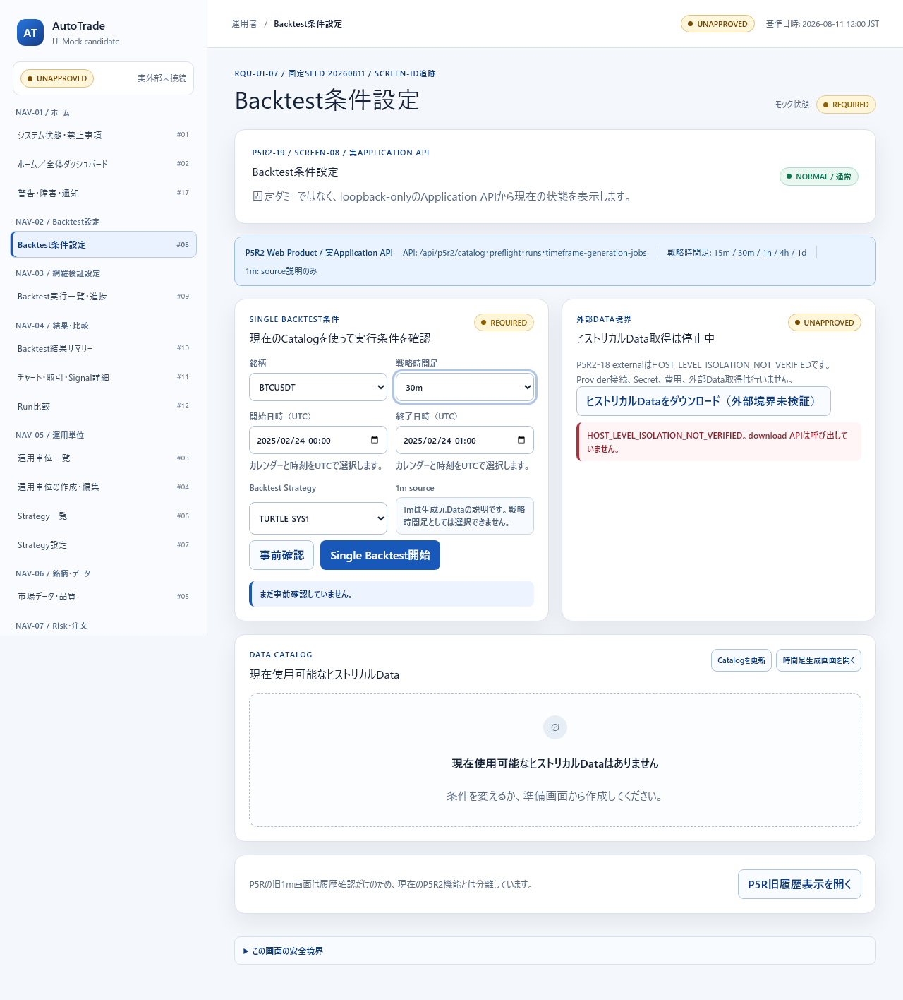
{kind=link}
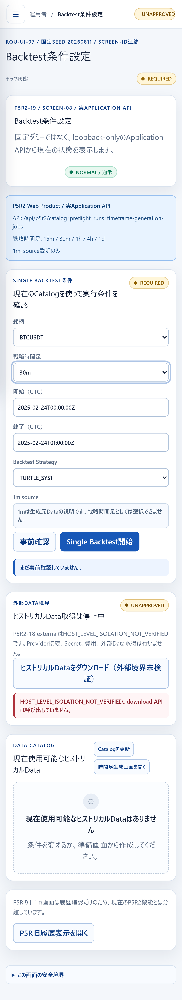
Test／Evidence: P5R2-19-UI-TF-001、P5R2-19-UI-BOUNDARY-001 ／ desktop capture ／ 受入条件: P5R2-MAN-AC-01
P5R2-MAN-02：Data Catalogを確認する
この操作でできること：現在使用可能なHistorical Dataを、銘柄・時間足・期間・品質・利用可否・旧Data・Jobの由来で確認できます。
画面の場所：SCREEN-08「Data Catalog」→「Catalogを更新」。
- 「現在使用可能なヒストリカルData」の表を読みます。表には銘柄、Dataの時間足、coverage期間、quality、利用可、旧Data、Job状態、由来が表示されます。Dataの中身や絶対pathは画面に出しません。
- Backtestで使うDataは、対象銘柄・対象戦略時間足・指定期間を覆い、
usable=trueで、旧Dataではなく、復旧要状態でないものに限ります。 - 品質が
USABLEなら通常利用できます。USABLE_WITH_WARNINGが表示された場合は警告を読んで採用可否を判断し、UNUSABLE、欠損、競合、provenance不足、RECOVERY_REQUIREDはRunへ渡しません。 - 同じData identityで期間が重ならない区間を後から取り込む場合は、既存区間と新規区間をマージできます。完全に同じbarは重複登録せず、値が違うbarは差分previewを確認して利用者が明示的にreplaceした場合だけ置き換えます。
- マージやreplaceで過去Runの結果が変わる場合があります。必要な結果は先にCSVへExportし、古いDataでの結果を残す必要がなければ削除して、新しいDataでBacktestをやり直します。確認なしの勝手な上書きや、OS上のDataファイル直接編集はしません。
確認できれば成功：Catalogの期間が希望期間を覆い、品質・利用可否・旧Data・Job由来を読んで、利用できるDataだけを選べる。
Catalogが空、期間不足、品質不良、競合、復旧要のとき：Runを開始しません。P5R2-MAN-03へ進み、不足なら生成確認を使います。外部Downloadは現在停止中なので、無効ボタンを押し続けません。
この結果から言ってはいけないこと：CatalogにDataが載っているだけで、すべての期間・時間足が使える、品質に問題がない、過去Runと結果が同じだとは言えません。
Data管理ルール: 同一identity、半開区間、非重複merge、重複dedupe、競合preview／明示replace、影響Runの再実行 ／ 受入条件: P5R2-MAN-AC-02、P5R2-REQ-HD-002
P5R2-MAN-03：不足Dataの確認ダイアログから生成画面へ進む
この操作でできること：指定した銘柄・戦略時間足・期間のDataがない場合に、Runを開始せず、理由を読んでから生成画面へ移動できます。
画面の場所：SCREEN-08「Single Backtest条件」→「事前確認」。
- 銘柄、戦略時間足、開始、終了を入力して「事前確認」を押します。
- 必要なDataがCatalogにない場合、Preflightは
STOPPEDになり、DATA_INSUFFICIENTと、銘柄・時間足・要求期間・source時間足1mが表示されます。 - 確認ダイアログ「指定期間の時間足Dataが不足しています」の本文が、入力した銘柄・時間足・期間と一致することを確認します。
- 生成する場合だけ「時間足を生成する」を押します。銘柄は生成画面へ引き継がれます。「取消」を押した場合は生成せず、Runも開始しません。
確認できれば成功：不足理由と対象範囲が表示され、OK後に同じ銘柄を選んだ生成画面が開く。Runが不足DataのままQUEUEDにならない。
失敗・異常時：不足DataなのにPASSやRun開始になった、確認対象の銘柄・時間足・期間が違う、外部Downloadが自動で始まった場合は停止します。
この結果から言ってはいけないこと：ダイアログで生成画面を開けたことは、生成Jobが完了した、Dataが利用可能になった、Runを開始できることを意味しません。
Test／Evidence: P5R2-19-UI-DATA-001、P5R2-22-UI-MANUAL-001 ／ desktop capture registry（dialog assertionを含む） ／ 受入条件: P5R2-MAN-AC-03
P5R2-MAN-04：複数時間足・期間を指定して生成Jobを確認する
この操作でできること：現在利用可能な1m sourceを選び、銘柄、生成する時間足（複数可）、期間を指定してlocal生成Jobを登録できます。
画面の場所：SCREEN-08→「時間足生成画面を開く」またはP5R2-MAN-03の確認ダイアログ→「指定時間足を生成する」。
- 「生成する銘柄」でBTCUSDTまたはETHUSDTを選びます。「元の1m source」は、Catalogで現在利用可能なsourceから選びます。
- 「生成する時間足（複数選択可）」で、15m、30m、1h、4h、1dのうち必要なものを複数選べます。1mは生成対象ではなく、元Dataです。
- 期間の初期値を確認します。sourceがある場合は、そのsourceの現在生成可能な全coverage期間が開始・終了の初期値です。期間を短くする場合もUTCの半開区間で入力します。
- sourceがない場合は、期間の既定値を設定せず、「時間足を生成する」も無効です。外部Data取得へ自動で切り替えません。
- 「時間足を生成する」を押すと、local Jobが
STAGEDで登録されます。Job ID、対象銘柄、時間足、期間、理由を記録します。 STAGED／QUEUED／RUNNINGは処理中です。必要なら「生成を取消」でCANCELLEDにします。FAILEDは原因を確認してから「再試行」します。RECOVERY_REQUIRED／孤児stagingは自動再開や利用可能への昇格をせず、原因確認まで止めます。- Jobが登録・実行された後も、Catalogでquality、coverage、usable、promotion状態を再確認します。
usableになる前のstaging DataをBacktestへ渡しません。
| Job状態 | 初心者向けの意味 | 次の操作 |
|---|---|---|
STAGED／QUEUED／RUNNING | 受付・順番待ち・処理中。まだ利用可能Dataではない。 | Job IDと対象を確認し、必要なら取消。完了扱いにしない。 |
CANCELLED | 生成を途中で止めた。usableへ昇格していない。 | 理由を記録し、必要なら新しい明示操作でやり直す。 |
FAILED | 検査または処理に失敗した。 | 原因を直してから再試行。失敗Dataを利用可能と表示しない。 |
RECOVERY_REQUIRED | 再起動・途中停止・孤児stagingなどで、安全に続けられない。 | 自動再開・勝手な再試行をせず、原因とCatalogを確認する。 |
確認できれば成功：生成対象を複数選べ、sourceの全期間が初期表示され、Jobの状態とusable昇格前の境界が読める。
止まったとき：source不在、期間不正、対象時間足不正、Job失敗、部分promotion、競合、復旧要の場合はRunを開始しません。
現在の検証範囲：P5R2-22のlocal証跡は、source Catalog、生成フォーム、Job登録と状態表示を確認したものです。外部ProviderからDataを取得した証跡ではありません。
{kind=link}
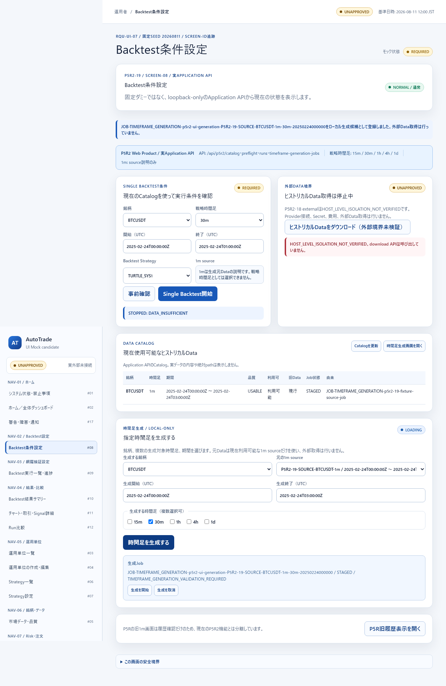
{kind=link}
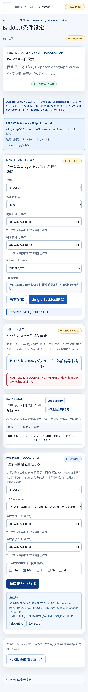
受入条件: P5R2-MAN-AC-02 ／ P5R2-MAN-AC-03 ／ P5R2-MAN-AC-06
P5R2-MAN-05：Runを取消し、terminal状態を読む
この操作でできること：実行一覧・進捗と結果サマリーで、同じRun状態から取消可否・理由を読み、処理中だけ取消要求を送れます。
画面の場所：SCREEN-09「Backtest実行一覧・進捗」／SCREEN-10「Backtest結果サマリー」。
- RunカードのRun ID、状態、進捗率、処理済み数、条件、取消可否・理由を確認します。SCREEN-09とSCREEN-10の説明が違わないことを見ます。
- 状態が
QUEUEDまたはRUNNINGのRunだけ「取消」を押します。受付中はボタンが無効になり、同じRunを二重押下できません。 - Application APIの受付結果と、更新後のRun状態を確認します。取消要求の送信だけで、SUCCEEDEDや成功結果へ書き換えません。
SUCCEEDED、FAILED、CANCELLED、RECOVERY_REQUIREDなどterminal／復旧要のRunでは取消できません。ボタンが無効で、理由と状態がそのまま表示されることが正常です。- terminal状態を変えたい場合は、画面上で直接書き換えず、新しい条件確認・新しいRun・復旧手順の範囲で扱います。
確認できれば成功：処理中だけ取消可能、受付中の二重操作不可、terminal状態不変、2画面で同じ取消可否・理由が表示される。
異常時：完了済みRunが取消できる、取消で結果やRun本体が消える、2回の押下で2件の操作が通る、SCREEN-09とSCREEN-10で可否が違う場合は停止してAudit／画面を記録します。
この結果から言ってはいけないこと：取消要求を受け付けたことは、Runが成功した、checkpointから自動再開した、結果が削除されたことを意味しません。
{kind=link}
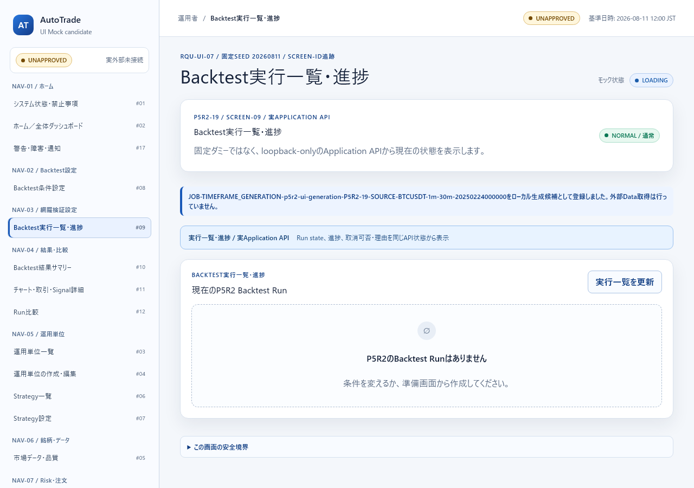
{kind=link}
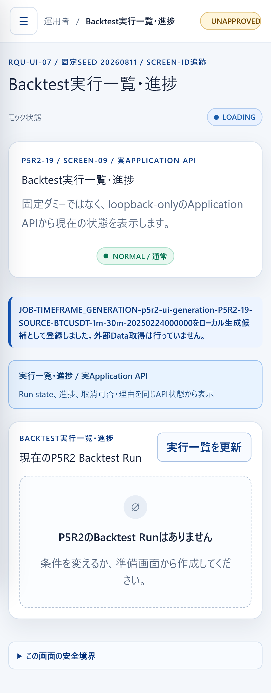
受入条件: P5R2-MAN-AC-04 ／ P5R2-REQ-RUN-001 ／ Capture Registry
P5R2-MAN-06：CSVを先にExportし、不要な結果表示だけを削除する
この操作でできること：保持する結果と不要な結果表示を分け、明示確認したときだけ完了済みResultArtifactを物理削除できます。
画面の場所：SCREEN-10「Backtest結果サマリー」→対象Runカード。
- 残しておく結果か、不要な結果かを決めます。残す結果は削除ボタンを押しません。
- 必要なLedgerや指標は、既存の結果詳細画面のCSV生成Jobを開始し、Jobが
SUCCEEDEDになってからCSVをダウンロードします。CSVが必要なのにExportが完了していない場合は削除を中止します。 - SCREEN-10で、対象Runが
SUCCEEDED、結果表示が「表示可能」、取消不可であることを確認します。実行中、失敗、取消済み、復旧要のRunは削除対象ではありません。 - 「結果表示を削除」を押し、確認ダイアログで、物理削除・復元不可・CSV／Historical Data／Run本体／Audit／Evidenceは削除しないことを読みます。
- 内容を理解している場合だけ「結果表示を削除する」を1回押します。受付中はボタンが無効になり、同じoperation tokenの再送は同じ結果として扱われ、二度の物理削除を行いません。
- 完了後、Run状態は
SUCCEEDEDのまま、結果表示が「削除済み（復元不可）」になり、保護対象とAuditが残っていることを確認します。復元APIはありません。
| 表示 | 意味 | 利用者の判断 |
|---|---|---|
RESULT_DELETE_PENDING | 対象確認後、物理操作の直前または処理中。 | 画面を連打せず、更新後の状態を確認する。 |
RESULT_DELETED | ResultArtifactだけを削除済み。Run本体・Data・CSV・Audit・Evidenceは残る。 | 復元を試さず、必要ならCSVを読む。新しいDataで再実行する。 |
DELETE_FAILED | 削除が完了しなかった。cascadeを続けない。 | 対象・理由・Auditを記録し、勝手な再削除やpath指定をしない。 |
確認できれば成功：確認ダイアログの後にResultArtifactだけが消え、CSV、Historical Data、Run本体、Audit、Evidenceが保護され、復元不可が表示される。
異常時：CSV／Data／Audit／Evidenceまで消える、任意pathを入力できる、完了前に削除できる、削除失敗後にcascadeする、復元ボタンが表示される場合は停止します。
この結果から言ってはいけないこと：結果表示を削除したことは、Run本体を削除した、過去のDataを消した、結果を復元できる、過去の計算をなかったことにできる、という意味ではありません。
{kind=link}
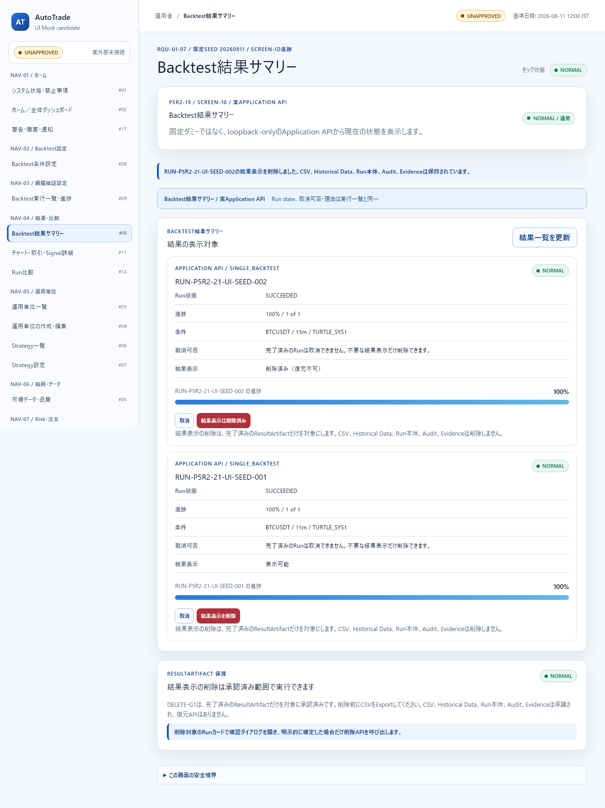
{kind=link}
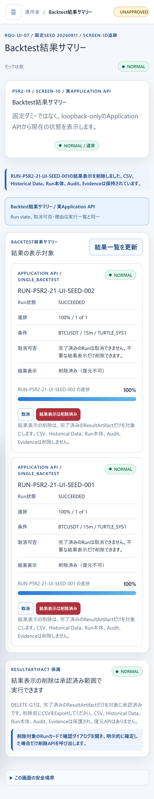
6.1.1 再起動・復旧・対象外の境界
- APIやWindowsの再起動後、
RECOVERY_REQUIREDが出たRun・Job・Catalogを成功／利用可能と読み替えません。表示された理由、Run ID、Job IDを記録し、原因確認と新しいRunの判断を分けます。 - 生成Jobの失敗・取消・孤児stagingは、未完成Dataをusableにしません。失敗原因を直してから、許可された再試行だけを行います。
- この手順の範囲にBroker接続、Paper、Live、実注文、実資金、Providerログイン、Secret、費用、P6開始は含みません。
Test／Evidence: P5R2-21-DELETE-TEST-001〜005、P5R2-21-UI-DELETE-001 ／ 削除受入verification ／ 受入条件: P5R2-MAN-AC-05、P5R2-MAN-AC-06
BT-MAN-01〜17はP5Rで受入済みの旧手順です。Spot／1m固定、旧タブ名、旧画面画像をP5R2の現行操作として使用しません。P5R2の説明と旧履歴を比較する場合だけ参照してください。BT-MAN-01：画面と、使ってよい条件を確認する
この操作でできること：この画面が、実注文ではなく、P5Rで許可されたローカルDataだけを使うBacktest画面だと確認できます。
いつ使う？毎回、最初に使います。初めての人は、ここを飛ばさないでください。
画面の場所：左メニューの「Backtest条件設定」→画面上部の「Backtest製品機能（P5R実API）」、安全境界、「P5R実行範囲」。
- 左メニューの「Backtest条件設定」をクリックします。スマートフォンでは、先に「メニューを開く」をクリックします。
- 見出し「Backtest製品機能（P5R実API）」を読みます。実APIとは、画面の見本だけでなく、ローカルのApplication APIに実際に問い合わせるという意味です。
- 安全境界で「外部市場データ、Broker、Secret、実注文、Paper／Liveには接続しません」と表示されることを確認します。
- 「P5R実行範囲」で、BTCUSDTまたはETHUSDT、Spot、1m、UTC、期間、
Data: P5 local read-onlyを確認します。 - 「Single Run」「Sweep」「履歴・比較」「Holdout・Walk-forward」の4つのタブがあることを確認します。タブは、機能を切り替える見出しです。
確認できれば成功：実行範囲と安全境界が画面に見え、実注文を出す画面ではないと分かる。
失敗・異常時（表示が違うとき）：対象外銘柄、外部接続、Broker、実注文が表示されるなら操作を止めます。画面の表示と時刻を記録し、P5Rの完了扱いにしません。
この結果から言ってはいけないこと：画面を開けたことは、Backtestが実行済み、本番運用可能、利益が保証されたことを意味しません。
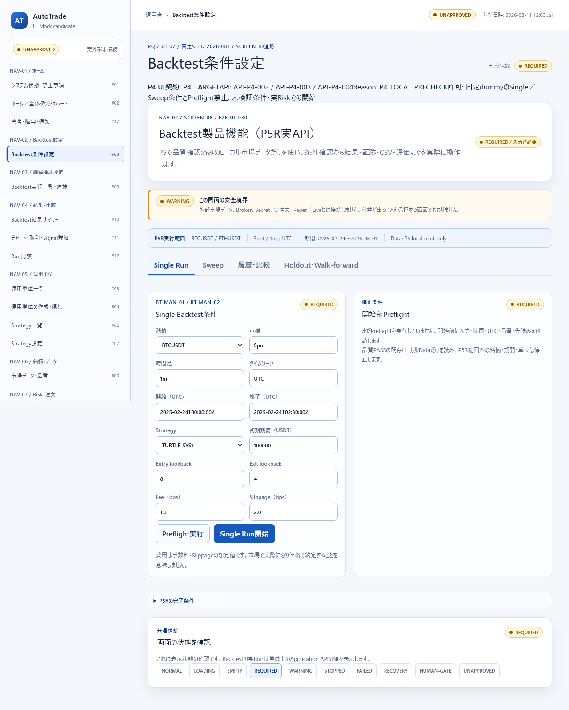
関係する用語：Backtest、Application API、Data、read-only ／ 受入条件: P5R-AC-02、P5R-AC-16
BT-MAN-02：条件を入力し、PreflightをPASSにする
この操作でできること：Backtestを始める前に、入力値とDataが安全な条件かを確認できます。Preflightは、車で出発する前の点検のようなものです。
いつ使う？Single Runを始める前、または条件を変更した後に使います。
画面の場所：「Single Run」タブ→「Single Backtest条件」→各入力欄→「Preflight実行」。
- 「銘柄」で
BTCUSDTまたはETHUSDTを選びます。 - 「市場」「時間足」「タイムゾーン」は、
Spot、1m、UTCになっていることを読みます。1mは1分ごとの値動き、UTCは世界共通の時刻です。 - 「開始（UTC）」と「終了（UTC）」を、例のように
2025-02-24T00:00:00Zの形式で入力します。末尾のZはUTCであることを示します。 - 「Strategy」で
TURTLE_SYS1またはTURTLE_SYS2を選びます。Strategyは、買う・売る・手仕舞いを決めるルールです。 - 「初期残高（USDT）」、Entry lookback、Exit lookback、Fee（bps）、Slippage（bps）を確認します。入力語の意味は用語集で確認できます。
- 「Preflight実行」をクリックします。
- 「開始前Preflight」に、
TYPE_AND_UNIT、P5_DATA_SCOPE、UTC_AND_CALENDAR、QUALITY、LOOKAHEADがすべてPASSになることを確認します。
確認できれば成功：「Preflight PASS。実Runを開始できます。」と表示され、「Single Run開始」ボタンが押せる状態になる。
止まったとき：PASSでない検査の名前とメッセージを読みます。銘柄・期間・単位・UTC・Data範囲を直してから再度Preflightします。PreflightがPASSでないままSingle Runを始めません。
この結果から言ってはいけないこと：Preflight PASSは、利益が出るという意味ではありません。開始してよい入力形式とData範囲だという意味です。
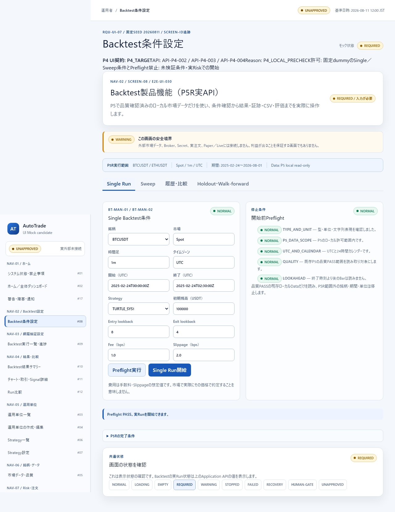
関係する用語：Preflight、UTC、Strategy、lookback、bps ／ 受入条件: P5R-AC-01、P5R-AC-02
BT-MAN-03：UTCではない日時を安全に止める
この操作でできること：時刻の意味が決められない入力を、計算開始前に止められることを確認できます。時刻がずれると、別のDataを読んでしまう危険があります。
いつ使う？入力間違いを安全に止める機能を確認するときに使います。通常の実験では、正しいUTC形式を入力してください。
画面の場所：「Single Backtest条件」→「開始（UTC）」→「Preflight実行」。
- 「開始（UTC）」を
2025-02-24T00:00:00に変更します。最後のZをわざと外します。 - 「Preflight実行」をクリックします。
- 「Preflight STOPPED。停止理由を直してから再実行してください。」と表示されることを確認します。
- 検査結果の
UTC_AND_CALENDARと、停止理由を読みます。 - 開始時刻を
2025-02-24T00:00:00Zに戻し、再度「Preflight実行」をクリックします。
確認できれば成功：UTCを示すZがない入力が、Run開始前にSTOPPEDになる。
止まったままのとき：開始・終了の両方がUTC形式か、開始が終了より前か、P5R範囲内かを確認します。
この結果から言ってはいけないこと：STOPPEDは、システムが壊れたという意味ではありません。意味の決められない入力から計算を守るために止めた状態です。
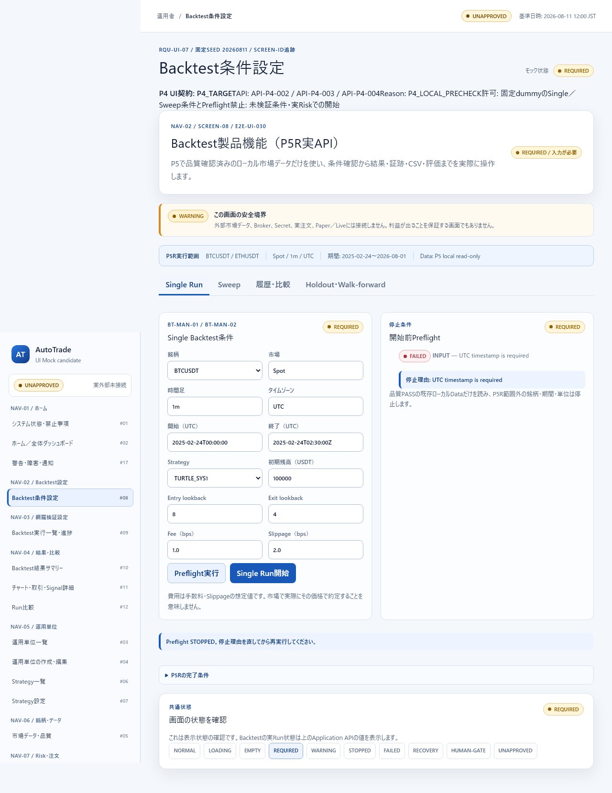
BT-MAN-04：Single Runを開始し、進み具合を見る
この操作でできること：1つの条件でBacktestを実行し、実際のRun ID、状態、処理済みBar数、進捗率、ETAを確認できます。Runは1回分の実験です。
いつ使う？PreflightがPASSになった後、1つの条件を詳しく調べるときに使います。
画面の場所：「Single Backtest条件」→「Single Run開始」→「実Run」。
- BT-MAN-02でPreflightがPASSになっていることを確認します。
- 「Single Run開始」をクリックします。
- 「実Run」に
RUN-AUTOTRADE-...のようなRun IDが表示されることを確認します。Run IDは、実験を取り違えないための名前です。 - 状態が
QUEUED（順番待ち）からRUNNING（計算中）へ変わることを読みます。 - 進捗率、処理済みBar数／全Bar数、ETA（あとどれくらいかの目安）を確認します。
SUCCEEDED（計算完了）になるまで待ちます。待機中に別のRunを作る場合は、Run IDを記録します。
確認できれば成功：Run IDがあり、計算中の状態と進捗が表示され、最後にSUCCEEDEDになる。
失敗したとき：FAILEDなら停止理由を読みます。QUEUEDやRUNNINGをSUCCEEDEDと読み替えません。結果が出る前にDetailsやCSVを開くと、RESULT_NOT_READYになる場合があります。
この結果から言ってはいけないこと：進捗100%やSUCCEEDEDは、利益が出たという意味ではありません。計算が最後まで終わったという意味です。
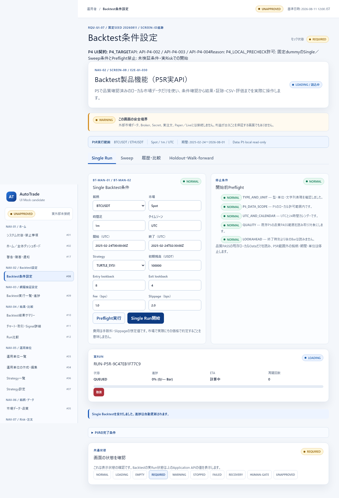
関係する用語：Run、QUEUED、RUNNING、SUCCEEDED、ETA ／ 受入条件: P5R-AC-03、P5R-AC-14
BT-MAN-05：5つの指標を、条件と一緒に読む
この操作でできること：計算が終わったRunについて、5つの数字と、その数字がどの条件の結果かを確認できます。
いつ使う？Single RunがSUCCEEDEDになった後に使います。
画面の場所：Single Runの結果に出る「Backtestの5指標」と「結果Ledgerと由来」。
- 「総損益」を読みます。初期残高から、最後の残高までにどれだけ増減したかを示します。単位はUSDTです。
- 「最大ドローダウン」を読みます。残高が、それまでの最高地点から最も大きく落ち込んだ幅です。大きいほど、途中の落ち込みが大きかったという意味です。
- 「勝率」を読みます。決済まで終わった取引のうち、利益がプラスだった割合です。勝率だけで結果の良さは決まりません。
- 「取引回数」を読みます。画面ではVirtual Fill（実注文ではない仮想的な約定）の回数です。
- 「最終残高」を読みます。計算の最後の時点での残高です。
- FeeとSlippageが想定値として表示されていることを確認します。
bpsは割合を細かく表す単位です。 - Dataの期間、Strategy、Entry／Exit lookback、初期残高も一緒に記録します。数字だけを切り取らないでください。
確認できれば成功：5指標、単位、同じRunの条件、費用想定、Data由来を一緒に読める。
表示が空のとき：RunがSUCCEEDEDか確認します。未完了なら待ちます。失敗したRunに、画面にない数字を想像で足しません。
この結果から言ってはいけないこと：総損益がプラスでも、将来の利益、実際の約定、手数料込みの現実の利益を保証しません。勝率が高くても、1回の大きな損失があれば全体結果は悪くなることがあります。
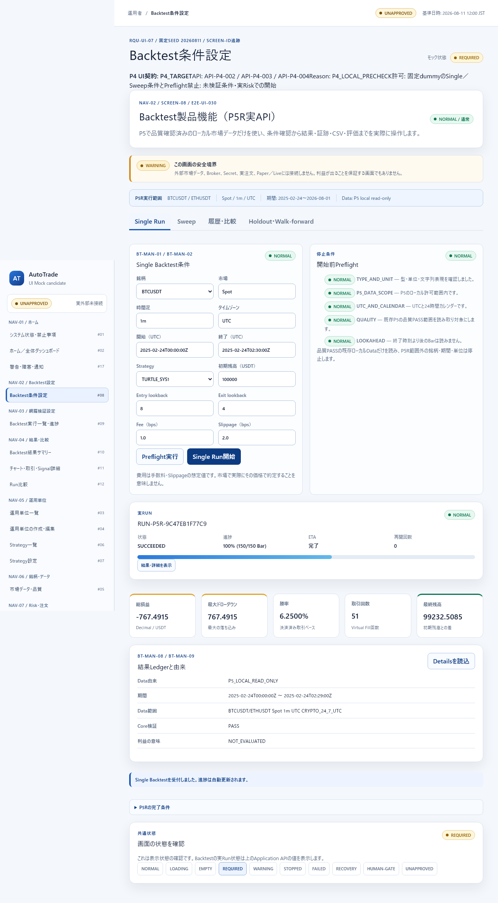
関係する用語：5指標、最大ドローダウン、勝率、Virtual Fill、Fee、Slippage ／ 受入条件: P5R-AC-05
BT-MAN-06：DetailsとLedgerを読んで、数字の根拠を確かめる
この操作でできること：5指標だけでなく、StrategyのSignal、仮想的な約定、残高の変化を時刻順に確認できます。Ledgerは、実験中の出来事を時刻順に書いたノートです。
いつ使う？数字の理由を詳しく調べたいとき、Strategy Coreの判断を確認したいときに使います。
画面の場所：SUCCEEDEDになった「実Run」→「結果・詳細を表示」または「Detailsを読込」→「結果Ledgerと由来」。
- SUCCEEDEDのRunで「結果・詳細を表示」をクリックします。
- 「Data由来」「期間」「Data範囲」「Core検証」「利益の意味」を読みます。
- Ledgerの「種類」を読みます。Signalは売買ルールから出た判断、Virtual Fillはその判断を仮想的に約定させた記録です。
- 「時刻（UTC）」「銘柄」「Signal」「方向」「価格」「残高／Equity」「理由」を、上から順に読みます。
- 理由に
SYS1_ENTRY、SYS2_ENTRY、EXIT_LONGなどがあれば、選んだStrategy Coreの判断理由として記録します。 - 表に表示される行数を超えて全件が必要なら、BT-MAN-12のCSV操作を使います。画面にない行を想像で補いません。
確認できれば成功：5指標からLedgerの時系列へ移動でき、Data由来とCore検証が同じRunに結び付いている。
読めないとき：RunがSUCCEEDEDか、対象Run IDが正しいかを確認します。結果が未完了ならRESULT_NOT_READYとして待ちます。
この結果から言ってはいけないこと：LedgerにSignalがあることは、実際の注文が成立したことを意味しません。Virtual Fillは仮想的な記録です。
関係する用語：Ledger、Signal、Virtual Fill、Equity、Provenance ／ 受入条件: P5R-AC-06
BT-MAN-07：実行中のSingle Runを取消する
この操作でできること：計算中のSingle Runを利用者の操作で止め、途中の状態（checkpoint）が保存されたか確認できます。
いつ使う？計算を止めたいとき、または再開機能を確認するときに使います。
画面の場所：「実Run」→状態がQUEUEDまたはRUNNINGのときに表示される「取消」。
- 終了日時を少し長い期間にしてPreflightをPASSにし、Single Runを開始します。
- 「実Run」がQUEUEDまたはRUNNINGの間に「取消」をクリックします。
- 状態が
CANCELLED（利用者の取消などで停止）になることを確認します。 - 停止理由とcheckpointが表示されることを確認します。checkpointは、途中までの状態を再開用に保存したものです。
- 停止したRunをSUCCEEDEDと読み替えず、結果を推測して記録しません。
確認できれば成功：CANCELLED、停止理由、checkpointが、同じRun IDに残る。
取消ボタンがないとき：すでにSUCCEEDED、FAILED、CANCELLEDになっている可能性があります。状態が変わった後に押す操作ではありません。
この結果から言ってはいけないこと：取消したRunは、最後まで計算した結果ではありません。checkpointがあっても、完了結果とは別に扱います。
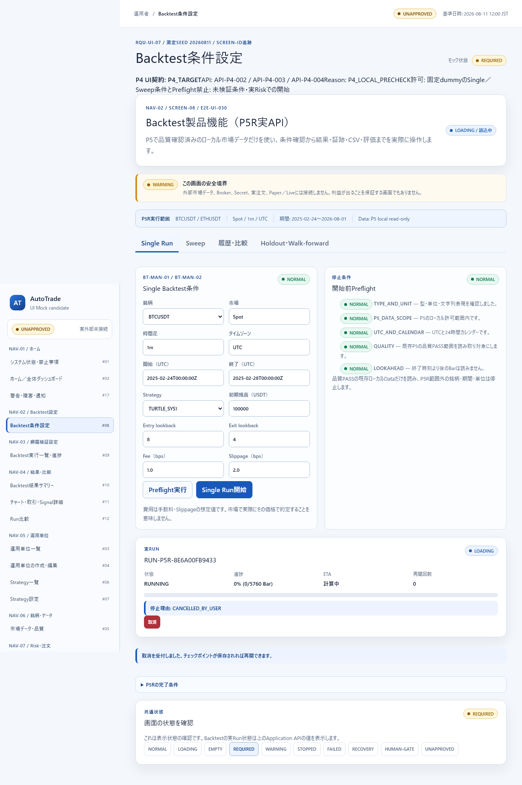
関係する用語：CANCELLED、checkpoint ／ 受入条件: P5R-AC-04
BT-MAN-08：checkpointからSingle Runを再開する
この操作でできること：取消したRunを、保存されたcheckpointから続けて計算できます。最初から別のRunを作ったのか、同じRunを再開したのかを区別できます。
いつ使う？CANCELLEDでcheckpointが残っているRunを続けたいときに使います。
画面の場所：CANCELLEDの「実Run」→「チェックポイントから再開」。
- BT-MAN-07でCANCELLEDとcheckpointを確認したRunを表示します。
- 「チェックポイントから再開」をクリックします。
- 状態がQUEUEDまたはRUNNINGへ戻ることを確認します。
- 「再開回数」が1以上になったことを確認します。
- SUCCEEDEDになるまで待ちます。
- Run IDが同じであること、再開回数が残っていること、結果Ledgerが表示できることを確認します。
確認できれば成功：同じRun IDがcheckpointから再開され、再開回数と最終SUCCEEDEDが表示される。
再開できないとき：checkpointがない、RunがCANCELLEDでない、条件が一致しない場合は自動で再開しません。新しいRunを作る前に理由を記録します。
この結果から言ってはいけないこと：再開できたことは、前の計算結果が正しいことや、将来も再現することを意味しません。
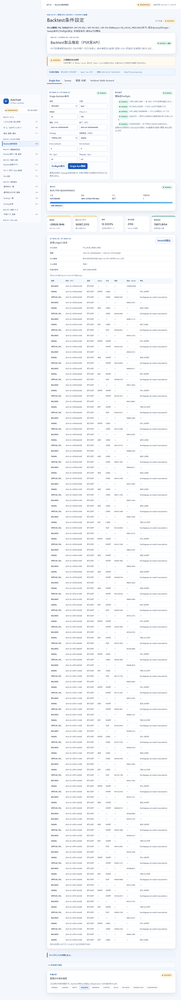
関係する用語：checkpoint、再開 ／ 受入条件: P5R-AC-04
BT-MAN-09：Sweepを実行し、部分失敗を隠さないことを確認する
この操作でできること：Sweepは、条件を少し変えた複数の実験をまとめて動かす機能です。親Job（まとめ役）と子Run（候補ごとの実験）を分けて見られます。
いつ使う？Entry lookbackなど、候補を並べて違いを比べたいときに使います。現在のUIは、現在のEntry lookbackから2候補を作ります。
画面の場所：「Sweep」タブ→「候補条件と重複検査」→「Sweep開始」。
- PreflightをPASSにし、「Sweep」タブをクリックします。
- 「候補1」「候補2」の値を読みます。UIでは現在のEntry lookbackと、そこに1を足した値が候補になります。
- 通常の動作だけを確認するときは「2番目の候補を意図的に失敗させる」をOFFのままにします。
- 部分失敗の表示を確認するときだけ、同じチェックをONにします。これは故障を再現する検査用の操作で、投資条件そのものではありません。
- 「Sweep開始」をクリックします。
- 親JobのSweep ID、状態、完了数／全候補数、失敗数を読みます。
- 子Runごとに、候補値、状態、失敗理由を読みます。
- チェックをONにした場合、親Jobが
PARTIAL_FAILED（一部だけ失敗）で、失敗した子にCANDIDATE_FORCED_FAILUREが表示されることを確認します。
確認できれば成功：親Jobと子Runが区別され、1つの失敗を隠して全体成功にしていない。
候補が動かないとき：重複、候補数の上限、入力条件、Data範囲を確認します。失敗した子を削除して全成功と記録しません。
この結果から言ってはいけないこと：Sweepは複数の過去実験です。複数の運用Unit、共有資金、同時に注文を出す仕組みではありません。
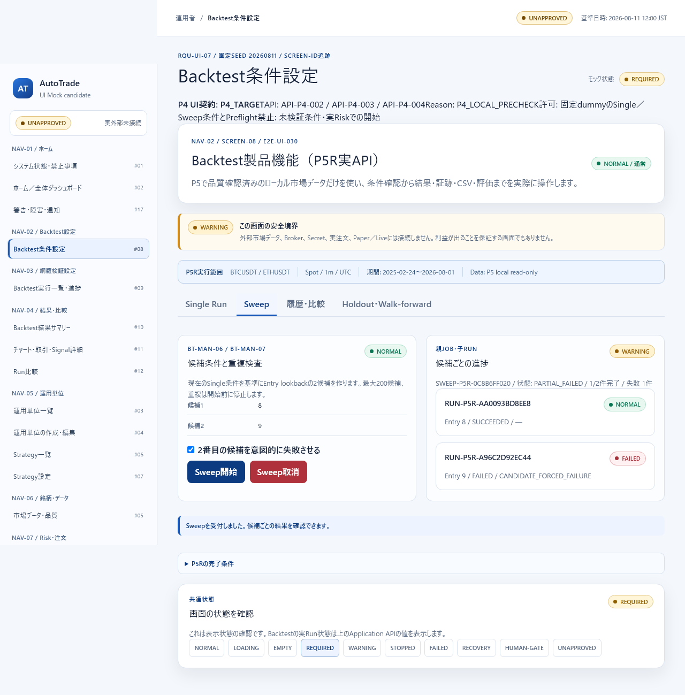
BT-MAN-10：履歴から過去のRunを開く
この操作でできること：このApplication APIで作った過去のRunを一覧から探し、条件・状態・結果をもう一度表示できます。
いつ使う？前の実験を見直すとき、別のRunと比較したいときに使います。
画面の場所：「履歴・比較」タブ→「履歴を更新」→Run一覧→「結果を開く」。
- 「履歴・比較」タブをクリックします。
- 「履歴を更新」をクリックします。
- Run一覧で、選択欄、Run ID、銘柄、Strategy、期間、状態、進捗を確認します。
- 見たいRunの行にある「結果を開く」をクリックします。
- SUCCEEDEDのRunなら5指標とLedgerが表示されることを確認します。CANCELLEDやFAILEDは、完了結果として読まないでください。
確認できれば成功：Run IDと条件を取り違えず、履歴から同じRunを開ける。
Runが見つからないとき：「履歴を更新」を再度押し、期間・銘柄・Strategy・Run IDを確認します。履歴にないRunを成功扱いにしません。
この結果から言ってはいけないこと：履歴にあることは、結果が良いことや、現在の条件でも同じ結果になることを意味しません。
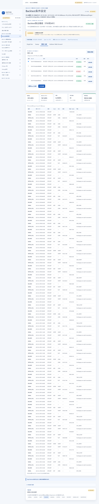
BT-MAN-17：再起動後に完了Runの履歴を復元する
この操作でできること：APIやWindowsを再起動した後でも、Eドライブに保存された完了Runを履歴から見つけ、同じ結果とLedgerを開けます。
いつ使う？パソコンを再起動した後、またはstop_autotrade.batとstart_autotrade.batでアプリを起動し直した後に使います。
画面の場所：アプリ起動後→「Backtest条件設定」→「履歴・比較」→「履歴を更新」→対象Runの「結果を開く」。
- 再起動前に、見たいRunの
RUN-AUTOTRADE-...というRun IDをメモします。 - 計算が
SUCCEEDEDになった後で、API／Windowsを再起動します。途中のRunを再起動だけで続きから動かす機能ではありません。 start_autotrade.batをダブルクリックし、ブラウザでhttp://127.0.0.1:4173を開きます。- 左メニューの「Backtest条件設定」を開き、「履歴・比較」タブをクリックします。
- 「保存済み履歴を読み込みました」と表示されることを確認します。表示されなくても、「履歴を更新」をクリックします。
- メモしたRun IDの行で、銘柄、Strategy、期間、状態、進捗を確認します。
- その行の「結果を開く」をクリックし、5指標とLedgerが表示されることを確認します。
- 必要なら、その復元Runを基準に「選択Runと比較」または「CSV生成」を使います。
確認できれば成功：再起動前後でRun ID、指標、Ledgerが同じです。実際のPlaywright試験では、APIプロセスを停止・起動し直した後に、metrics、provenance、rowsが一致することも確認しています。
復旧確認が必要なとき：RECOVERY_REQUIREDは、途中で止まった、ファイルが壊れた、またはRun IDが一致しない状態です。成功結果として比較・採用せず、理由を記録して再実行します。LEGACY_RESULT_ONLYは旧形式の結果で、UNKNOWNは当時保存されていなかった条件です。
この結果から言ってはいけないこと：履歴が戻ったからといって、計算途中のRunが自動で再開された、結果が正しいと保証された、またはLive運用へ進めると判断してはいけません。
注意：完了Runの復元はできますが、計算途中Runの自動再開、過去のCSV Jobの状態、Holdoutの一度だけという状態、Eドライブ故障からのバックアップ復元は、この機能の対象外です。
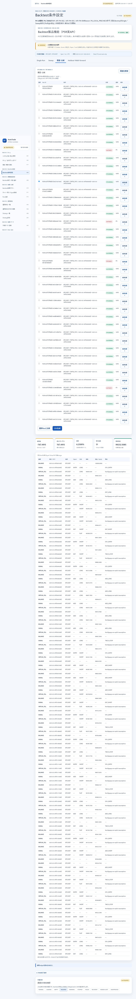
関係する用語：履歴、Provenance、Ledger、RECOVERY_REQUIRED、LEGACY_RESULT_ONLY ／ 受入条件: P5R-AC-17、REQ-V3-0128
BT-MAN-11：2つのRunを比較する
この操作でできること：2つの実験の結果と条件の違いを並べて確認できます。条件が合わない2つを、無理に同じランキングへ入れないことも確認できます。
いつ使う？同じ問題を条件違いで調べた後に使います。
画面の場所：「履歴・比較」→2つのRunの選択欄→「選択Runと比較」。
- 履歴から、比較の基準にするRunを「結果を開く」で開きます。
- 比較対象の別のRunのラジオボタンを選びます。ラジオボタンは、候補から1つを選ぶ丸い選択欄です。
- 「選択Runと比較」をクリックします。
comparable=trueなら、比較できる条件であることと、表示された条件差を読みます。- 別Strategyなど条件が合わないRunを選んで同じ操作を行い、
comparable=falseと理由が表示されることを確認します。 - 総損益だけでなく、最大ドローダウン、勝率、取引回数、最終残高、期間、Strategy、費用想定を一緒に読みます。
確認できれば成功：比較可能かどうかと、その理由が表示され、条件差を隠さずに読める。
比較できないとき：異なる銘柄、期間、Strategyなどを無理に比較しません。同じ条件で作り直すか、比較できない理由を記録します。
この結果から言ってはいけないこと：比較画面は「最良Run」を自動選択しません。比較結果だけでLive開始を決めません。
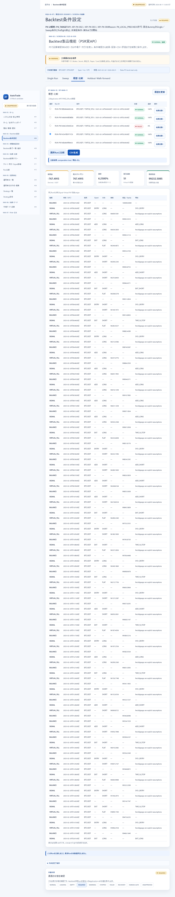
関係する用語：comparable、5指標 ／ 受入条件: P5R-AC-10
BT-MAN-12：LedgerをCSVにしてダウンロードする
この操作でできること：画面に表示しきれないLedgerの行を、CSVという表形式のファイルにして保存できます。CSV Jobは、ファイルを作る処理を別に動かす仕組みです。
いつ使う？全行を後で調べたいとき、結果を保存・共有したいときに使います。
画面の場所：「履歴・比較」→SUCCEEDEDのRunを開く→「CSV生成」→「CSVダウンロード」。
- SUCCEEDEDのRunを選び、「結果を開く」をクリックします。
- 「CSV生成」をクリックします。
- CSV Jobの状態と進捗を確認します。完了するまで画面を閉じずに待つか、Job IDを記録します。
CSV Job: SUCCEEDEDになったことを確認します。- 「CSVダウンロード」リンクが表示されたら、クリックして保存します。
- 保存したファイル名、Run ID、対象期間を記録します。別RunのCSVと混ぜません。
確認できれば成功：CSV JobがSUCCEEDEDになり、CSVダウンロードリンクが表示される。
まだダウンロードできないとき：JobがQUEUED／RUNNINGなら待ちます。FAILEDなら理由を読み、RunがSUCCEEDEDか、対象のRun IDが正しいかを確認します。
この結果から言ってはいけないこと：CSVは結果を保存する形式です。CSVを保存しただけで、計算の正しさや将来利益が保証されるわけではありません。
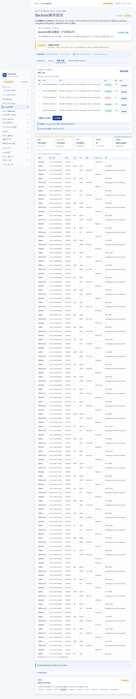
BT-MAN-13：確定前のHoldoutアクセスを止める
この操作でできること：条件を決める前に、最後まで隠しておく評価用Data（Holdout）を見てしまう操作を止められます。
いつ使う？Holdoutを調整に使っていないことを確認するときに使います。
画面の場所：「Holdout・Walk-forward」タブ→「Holdout」→「確定前を試す」。
- 「Holdout・Walk-forward」タブをクリックします。
- 「確定前を試す」をクリックします。
EARLY_HOLDOUT_ACCESSと、STOPPEDの表示を確認します。- この期間の数字を、Strategyやパラメータの調整に使いません。
確認できれば成功：確定前のHoldoutがSTOPPEDになり、早く見た結果を使えない。
結果が出たとき：確定前アクセスがSUCCEEDEDになるなら、調整を止めて画面と理由を記録します。これはP5Rの安全境界に反します。
この結果から言ってはいけないこと：Holdoutを見た後の結果を、初めて見た評価結果のように扱ってはいけません。
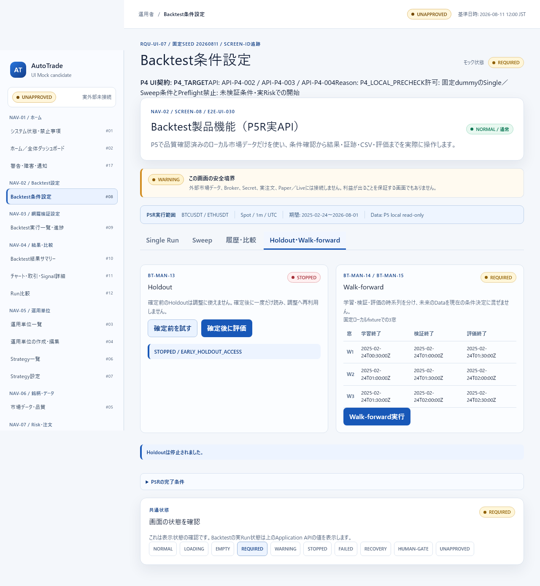
BT-MAN-14：確定後のHoldoutを一度だけ評価する
この操作でできること：条件を決めた後に、最後まで隠しておいたHoldoutを評価用として一度だけ読み、調整には戻さないことを確認できます。
いつ使う？Strategyやパラメータを決め終わった後の、最後の評価として使います。
画面の場所：「Holdout・Walk-forward」タブ→「Holdout」→「確定後に評価」。
- 条件を決め終わったことを確認します。Holdoutの結果を見てから条件を変える予定なら、まだ押しません。
- 「確定後に評価」をクリックします。
SUCCEEDED、評価期間、行数を確認します。- 「調整へ再利用しない」意味の表示を確認します。
- 同じ操作をもう一度試し、二重評価がSTOPPEDになることを確認します。
- 学習期間の結果とHoldoutの結果を分けて記録します。
確認できれば成功：確定後評価は一度だけSUCCEEDEDになり、二度目の再利用は止まる。
評価前に条件を変えたくなったとき：Holdoutを見た後なら、見た結果を使って調整したことを記録し、同じ評価を公平な最後の評価と扱いません。
この結果から言ってはいけないこと：Holdoutが良くても、将来の市場で同じ結果になるとは言えません。
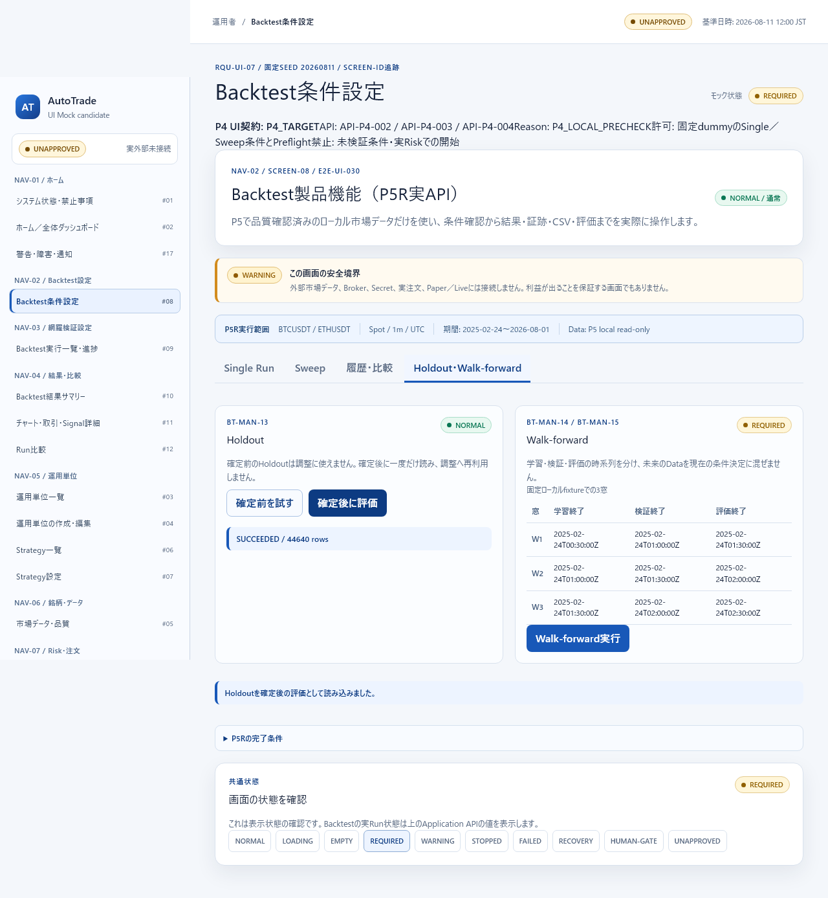
BT-MAN-15：Walk-forwardを3つの時間窓で実行する
この操作でできること：時間を順番に区切り、過去で学び、次の期間で確かめ、その後の期間で評価する流れを3窓で確認できます。未来のDataを先に使わないための検査です。
いつ使う？1つの期間だけの結果に頼らず、時間をずらして確かめたいときに使います。
画面の場所：「Holdout・Walk-forward」タブ→3窓の表→「Walk-forward実行」。
- 表のW1、W2、W3について、学習終了、検証終了、評価終了の時刻を読みます。
- それぞれの窓で、時間が過去から未来へ進み、学習・検証・評価の順になっていることを確認します。
- 「Walk-forward実行」をクリックします。
SUCCEEDED、窓 3、holdout再利用=falseを確認します。- 未来参照がないことを示す表示を確認します。
- 窓の時刻が逆順、重複、P5R範囲外なら、結果を採用せず停止理由を記録します。
確認できれば成功：3つの窓が実行され、未来参照なしとHoldout再利用なしが表示される。
止まったとき：WALK_FORWARD_OVERLAPなどの理由を読み、学習・検証・評価の境界が重ならないように直します。
この結果から言ってはいけないこと：Walk-forwardが完了しても、Strategyが将来必ず利益を出す、またはLiveへ進めるという意味ではありません。
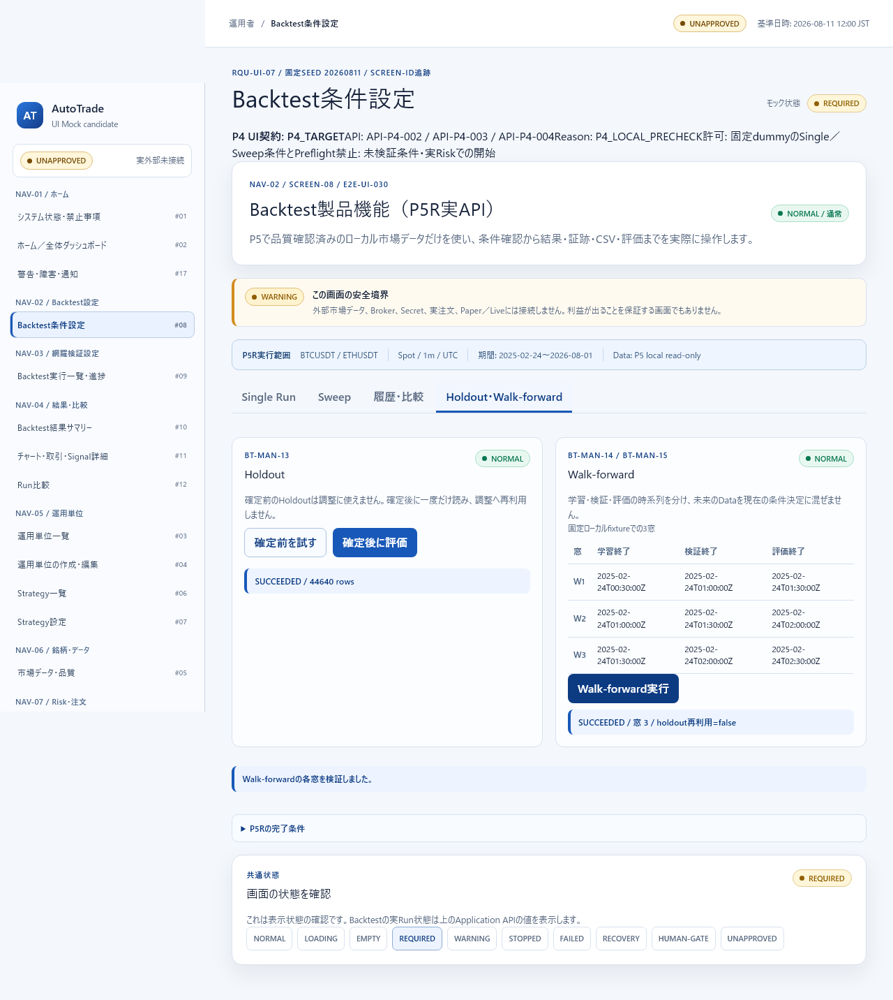
関係する用語：Walk-forward、未来参照、学習・検証・評価 ／ 受入条件: P5R-AC-13、P5R-AC-15
BT-MAN-16：Sweepを途中で取消する
この操作でできること：複数候補をまとめているSweep全体を途中で止め、親Jobの取消状態と、子Runの状態が残ることを確認できます。
いつ使う？候補実験を続ける必要がなくなったとき、またはSweep取消の安全動作を確認するときに使います。
画面の場所：「Sweep」タブ→Sweep開始後の「親Job・子Run」→「Sweep取消」。
- PreflightをPASSにし、「Sweep」タブを開きます。
- 「Sweep開始」をクリックします。
- 親Jobの状態が完了する前に、「Sweep取消」をクリックします。
- 親Jobの状態が
CANCELLEDになることを確認します。 - 候補ごとの子Runが表示され、各Runの状態が消えずに残っていることを確認します。
- 取消したSweepをSUCCEEDEDやPARTIAL_FAILEDと読み替えず、停止時点の記録として保存します。
確認できれば成功：親SweepはCANCELLEDになり、子Runの状態と候補条件を後から読める。
取消ボタンがないとき：SweepがすでにSUCCEEDED、PARTIAL_FAILED、CANCELLEDになっている可能性があります。完了後は取消操作ではなく、履歴や結果を確認します。
この結果から言ってはいけないこと：一部の子Runが完了していても、取消した親Sweep全体が成功したとは言えません。
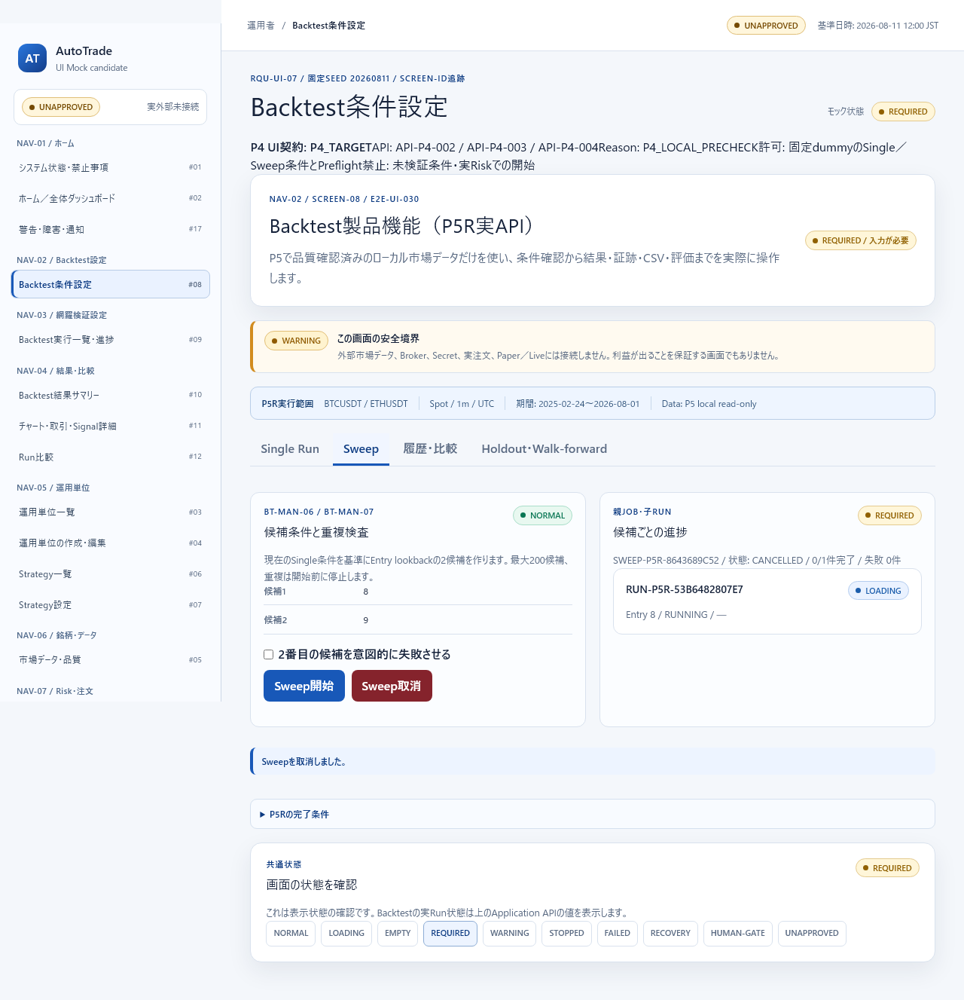
関係する用語：Sweep、親Job・子Run、CANCELLED ／ 受入条件: P5R-AC-04、P5R-AC-08
7. 止まったときの読み方
エラーコードは、システムが出す短い名前です。名前だけでなく、意味と次の操作を読みます。
| 表示 | かんたんな意味 | 次にすること | してはいけないこと |
|---|---|---|---|
DATA_INSUFFICIENT | 指定した銘柄・戦略時間足・期間を覆うDataがCatalogにない。 | Runを開始せず、確認ダイアログの対象を読み、必要ならP5R2-MAN-04の生成画面へ進む。 | 不足Dataを想像で補う、外部Downloadを勝手に始める。 |
HOST_LEVEL_ISOLATION_NOT_VERIFIED | 外部Data取得を安全に実行できる環境証明がまだない。 | Download APIを呼ばず、Provider・Secret・費用を使わず、local Catalogの確認だけを続ける。 | ボタンを有効化したとみなす、ログインやAPI callを試す。 |
STRATEGY_TIMEFRAME_INVALID | 戦略時間足が5つの許可値でない。 | 15m／30m／1h／4h／1dへ戻し、1mはsource説明として扱う。 | 1mを現行戦略時間足として指定する。 |
QUALITY／UNUSABLE | Dataの品質または利用可否がBacktest条件を満たさない。 | Catalogの品質・理由・provenanceを確認し、usableになるまでRunを止める。 | 欠損・競合・警告を無視して成功扱いにする。 |
JOB_NOT_CANCELLABLE／JOB_RETRY_NOT_ALLOWED | 生成Jobが現在の状態では取消・再試行できない。 | 現在のJob状態を保存し、terminal／復旧要なら自動操作を続けない。 | 古い画面のボタンを連打する、状態を手入力で変える。 |
RUN_NOT_CANCELLABLE／RUN_STATE_CONFLICT | Runがterminal、復旧要、または別操作で状態が変わった。 | Run一覧を更新し、状態と理由を読み直す。 | terminal状態を成功・取消へ書き換える。 |
DELETE_FAILED／RESULT_DELETE_PENDING | ResultArtifact削除が処理中または完了していない。 | Auditと対象を記録し、cascadeや任意path操作をせず停止する。 | Data、CSV、Audit、Evidenceまで削除する、復元を試す。 |
TYPE_AND_UNIT | 入力の種類や単位が合わない。 | 数値、単位、日時形式を確認してPreflightをやり直す。 | 数字を想像で置き換える。 |
P5_DATA_SCOPE | 銘柄・期間がP5Rの範囲外。 | BTCUSDT／ETHUSDTと許可期間へ戻す。 | 範囲外Dataを勝手に追加する。 |
UTC_AND_CALENDAR | UTCやカレンダーが確認できない。 | 日時の末尾Zと順序を確認する。 | ローカル時刻のまま計算する。 |
QUALITY | Data品質が条件を満たさない。 | 表示された理由を記録し、品質確認済みDataを使う。 | 欠けたDataを想像で補う。 |
LOOKAHEAD | 未来のDataを先に使う可能性がある。 | 条件と時間窓を見直し、未来参照なしを確認する。 | 結果が良いから無視する。 |
CORE_VALIDATION_... | Strategy Coreが条件を受け付けなかった。 | Coreの停止理由を記録し、成功扱いにしない。 | 結果を手入力して完成にする。 |
RESULT_NOT_READY | 計算が終わる前に結果を読もうとした。 | 同じRun IDがSUCCEEDEDになるまで待つ。 | 画面にない数字を推測する。 |
CANDIDATE_FORCED_FAILURE | Sweepの検査で候補を意図的に失敗させた。 | 親JobがPARTIAL_FAILEDであることを確認する。 | 失敗した子を隠して全成功にする。 |
EARLY_HOLDOUT_ACCESS | 確定前にHoldoutへアクセスした。 | 調整へ使わず、確定後評価まで待つ。 | 見た数字で条件を直す。 |
WALK_FORWARD_OVERLAP | 時間窓が重なっている。 | 学習・検証・評価の順序と境界を直す。 | 未来参照の可能性を無視する。 |
CANCELLED | 利用者の取消などで停止した。 | checkpointと再開可否を確認する。 | 完了結果とみなす。 |
PARTIAL_FAILED | Sweepの一部候補が失敗した。 | 親と子を分けて記録する。 | 親をSUCCEEDEDへ書き換える。 |
8. 用語集
ここでは、この手順書で使う言葉を、投資初心者向けに説明します。
- Backtest
- 過去の市場Dataに売買ルールを当てはめる仮想実験。実際の注文記録ではない。
- Application API
- 画面から受けた操作を計算サービスへ渡し、結果を画面へ返す窓口。このP5Rではローカルで動く。
- Data
- 計算の材料になる過去の値動き。Dataの期間、銘柄、時刻の意味が違うと結果も変わる。
- 戦略時間足
- Strategyが判断に使う時間のまとまり。P5R2では15m、30m、1h、4h、1dから選ぶ。1mは戦略時間足ではない。
- 1m source
- 上位の戦略時間足を生成する元になる最小時間足のData。sourceの期間・品質・利用可否はCatalogで確認する。
- 半開区間 [開始, 終了)
- 開始時刻は含み、終了時刻は含まない期間の表し方。隣り合う期間をつなぐときに同じbarを二重に数えないために使う。
- Data Catalog
- 銘柄、時間足、coverage、quality、usable、旧Data、生成Jobの由来を確認する一覧。Dataの絶対pathやbar本体を画面へ出すものではない。
- 時間足生成Job
- 1m sourceから指定した上位時間足を作る処理の記録。STAGEDやRUNNINGは途中状態で、CatalogがusableになるまでBacktestには使えない。
- usable
- 品質・期間・由来の確認を通り、Backtestの材料として使える状態。Catalogに載っているだけではusableとは限らない。
- ResultArtifact
- Backtest結果の表示用ファイル。P5R2の承認範囲では、完了済みの不要なResultArtifactだけを削除し、Run本体やDataは削除しない。
- RESULT_DELETED
- 結果表示の物理削除が完了した状態。復元APIはなく、CSV、Historical Data、Run本体、Audit、Evidenceは保護される。
- read-only
- 読むだけで、元のDataを書き換えないこと。
- 銘柄（symbol）
- どの取引対象を調べるかを表す名前。この画面ではBTCUSDTまたはETHUSDT。
- Strategy
- いつ買うか、いつ売るか、いつ手仕舞いするかを決めるルール。TURTLE_SYS1とTURTLE_SYS2がある。
- UTC
- 世界で共通に使う時刻の基準。入力の末尾に
Zを付け、別の地域の時刻と混同しない。 - Entry／Exit lookback
- Entry（入り口）やExit（出口）を判断するときに、過去の何本のBarを見るかを表す設定。
- bps
- FeeやSlippageの割合を細かく表す単位。画面の想定値を、実際の市場費用と混同しない。
- Fee
- 取引を想定したときの手数料。このP5Rでは入力した想定値。
- Slippage
- 注文したい価格と、実際に成立すると仮定した価格のずれ。このP5Rでは想定値。
- Preflight
- Backtestを始める前の安全点検。入力、Data範囲、UTC、品質、未来参照を確認する。
- Run
- 1回分のBacktest実験。Run IDで、どの条件の実験かを区別する。
- QUEUED
- 計算の順番を待っている状態。
- RUNNING
- 現在計算している状態。
- SUCCEEDED
- そのRunの計算が最後まで終わった状態。利益が出たという意味ではない。
- STOPPED
- 安全条件を満たさないため、開始や読込を止めた状態。
- CANCELLED
- 利用者の取消などで途中停止した状態。
- ETA
- 完了までの残り時間の目安。
- checkpoint
- 途中までの計算状態を、後で再開できるように保存したもの。
- 再開（resume）
- checkpointを使って、同じRunの続きから計算すること。
- Sweep
- 条件の候補を複数作り、Backtest実験をまとめて行う機能。本番運用Unitではない。
- 親Job・子Run
- 親Jobは候補全体をまとめるもの。子Runは候補1つごとの実験。
- PARTIAL_FAILED（部分失敗）
- 複数候補の一部だけが失敗した状態。全体成功とは違う。
- 5指標
- 総損益、最大ドローダウン、勝率、取引回数、最終残高。
- 最大ドローダウン
- 残高が過去最高から最も大きく落ち込んだ幅。
- 勝率
- 決済まで終わった取引のうち、利益がプラスだった割合。
- Signal
- Strategyが出した「買う、売る、手仕舞いする」などの判断。
- Virtual Fill
- Signalに基づき、仮想的に注文が成立したと計算した記録。実注文ではない。
- Ledger
- Signal、Virtual Fill、残高などを時刻順に記録した表。
- Equity
- その時点で持っているものを含めた評価上の残高。
- Provenance
- 結果がどのData、期間、Strategy、Core検証から生まれたかを示す由来情報。
- 履歴
- 過去に作ったRunの一覧。古い結果を新しい結果で上書きせず、取り違えないために使う。
- 履歴カタログ
- Run ID、条件、状態、指標、結果ファイルの場所を保存した一覧ファイル。DBサーバではなく、EドライブのJSONファイルです。
- RECOVERY_REQUIRED
- ファイルが壊れている、Run IDが合わない、または再起動時に計算途中だったため、成功結果として使う前に確認が必要な状態。
- LEGACY_RESULT_ONLY
- 旧形式のresult.jsonだけから復元した結果。保存されていなかった条件はUNKNOWNと表示し、想像で補わない。
- comparable
- 2つのRunを同じ問題として比べてよいかを示す表示。falseなら理由を確認する。
- Job
- CSV作成など、画面とは別に時間をかけて行う処理。
- CSV
- 表の行と列を保存するファイル形式。保存形式であり、結果の正しさを保証するものではない。
- Holdout
- 条件を決める間は隠しておき、最後に一度だけ評価するData。
- 調整
- Strategyの設定や期間などを変え、結果を良くする方向を探すこと。
- 学習・検証・評価
- 過去の条件を決める期間、途中で確かめる期間、最後に評価する期間。順番を守る。
- Walk-forward
- 時間窓を順番にずらしながら、学習・検証・評価を繰り返す確認方法。
- 未来参照
- その時点ではまだ分からない未来のDataを、条件決定やSignalに使ってしまうこと。結果を不自然に良くするため禁止する。
9. 結果から言ってはいけないこと
- 総損益がプラスだから、「将来も儲かる」と言ってはいけません。
- SUCCEEDEDだから、「実際の注文も同じ価格で成立する」と言ってはいけません。
- 勝率が高いから、「安全」と言ってはいけません。最大ドローダウンや1回の損失も読みます。
- 比較結果が良いから、「最良Strategyが自動で選ばれた」と言ってはいけません。
- Sweepの子Runが複数成功したから、「複数の運用Unitが本番で動く」と言ってはいけません。
- Holdoutを評価したから、結果を見ながら条件を調整してよいとは言えません。
- Walk-forwardがSUCCEEDEDだから、Forward、Shadow、Paper、Liveが開始できるとは言えません。
- この手順書は投資助言ではありません。特定の銘柄を買う・売る判断を勧めるものではありません。
10. 画像・証跡・出典
10.1.1 P5R2-22現行画像・証跡
P5R2の画像は、実Application APIへ接続したPlaywrightが、可視名・role・label・状態・エラーメッセージを先にassertし、その直後に同じ画面を撮影したものです。desktopは1280x900、mobileは390x844です。各Capture Registryにviewport、axeのcritical／serious結果、外部Request、境界、画像pathを記録しています。
| 現行操作 | desktop画像 | mobile画像 | assert・Evidence |
|---|---|---|---|
| P5R2-MAN-01 条件・5時間足・外部境界 | SCREEN-08 desktop PNG | SCREEN-08 mobile PNG | P5R2-19 Registry ／ external 0、axe blocking 0 |
| P5R2-MAN-03 不足Data確認・P5R2-MAN-04生成フォーム | SCREEN-08 generation desktop PNG | SCREEN-08 generation mobile PNG | P5R2-22 Registry ／ dialog assertion、source全期間、STAGED、external 0、axe blocking 0 |
| P5R2-MAN-05 実行一覧・進捗 | SCREEN-09 desktop PNG | SCREEN-09 mobile PNG | P5R2-22 Registry ／ real API、external 0、axe blocking 0 |
| P5R2-MAN-06 結果表示削除後 | SCREEN-10 desktop PNG | SCREEN-10 mobile PNG | P5R2-21 Registry ／ logical ID、保護対象、external 0、axe blocking 0 |
P5R2-22の画像は操作をassertした後に撮影し、画像だけを根拠にしていません。Data DownloadはHOST_LEVEL_ISOLATION_NOT_VERIFIEDをassertし、外部APIを呼び出していません。生成フォームのEvidenceは、sourceがない場合に既定期間を設定しない境界、sourceがある場合に全coverageを初期表示する境界の両方を本文で説明しています。
10.1.2 旧P5R画像の読み方
ここから下の旧P5R画像は、P5RでPlaywrightが画面の要素・状態・メッセージを先に確認し、その直後に撮影した履歴です。画像中のSpot／1m固定、旧タブ名、旧結果操作をP5R2の現行仕様へ読み替えません。
| 証跡 | 場所 | 確認内容 |
|---|---|---|
| 既存desktop/mobile画像とRegistry | P5R-09 desktop Registry | BT-MAN-01〜15、assert先行、外部通信、axe結果。 |
| 追加Sweep取消画像とRegistry | P5R-MANUAL desktop Registry | BT-MAN-16、desktop/mobile、CANCELLED、親Job・子Run。 |
| Playwrightテスト | ui/mock/tests/p5r-backtest.spec.ts、ui/mock/tests/p5r-backtest-manual-improvement.spec.ts | 画面のDOM assert後に画像を撮影し、外部通信0と重大axe違反0を確認。 |
| 再起動後復元Playwright | ui/mock/tests/backtest-history-recovery.spec.ts ／ API再起動Evidence | 所有するAPI子プロセスを停止・再起動し、同じRun ID、metrics、provenance、rows、UI履歴、指標、Ledgerを確認。 |
| 正式な作成ルール | 操作手順書作成ルール | 機能一覧、文章、用語、画像、アクセシビリティ、レビューの基準。 |
10.2 Web出典
以下は、読みやすい文章、手順の構成、アクセシビリティ、Backtestの安全説明を作るために、2026-08-16に確認した公式・公的資料です。実装の機能仕様は、プロジェクトの要件定義書と実装を正本とします。
| 出典 | 採用した考え方 |
|---|---|
| 文化庁「在留支援のためのやさしい日本語ガイドラインほか」 | 読み手に必要な情報を整理し、伝える内容を選ぶ。 |
| 文化庁・出入国在留管理庁「在留支援のためのやさしい日本語ガイドライン」 | 簡潔に書く、不足情報を補う、図や表を使う。 |
| W3C WCAG 2.2 | 見出し、キーボード、画像代替、リンク、エラー、動的状態。 |
| W3C Headings and Labels ／ W3C Link Purpose | 見出し・ラベル・リンクの目的を明確にする。 |
| W3C User Notification | エラーの原因と直し方、成功・状態通知を示す。 |
| Buckinghamshire Council Step by Step | 作業全体を先に見せ、順序を番号付きで案内する。 |
| Investor.gov Performance Claims | Backtestは仮想であり、過去の結果は将来利益を保証しない。 |
10.3 改訂履歴
| 日付 | 版 | 変更 |
|---|---|---|
| 2026-08-23 | v0.6-P5R2-candidate | P5R2-22候補として、現行の15m／30m／1h／4h／1d、1m source、UTC半開区間、Data Catalog、生成Job、不足Data確認、Run取消、terminal状態、CSV先行Export、ResultArtifact物理削除、保護対象、復旧境界、desktop／mobile画像とCapture Registryを追加。旧P5Rの1m手順は履歴として明示分離。H2未承認。 |
| 2026-08-16 | v0.5 | 完了Runの履歴カタログをEドライブへ保存し、API／Windows再起動後に履歴・詳細・Ledgerを復元するBT-F-17／BT-MAN-17を追加。旧形式、破損、不一致、未完了の表示、DBサーバを使わない保存方式、Playwrightの実再起動証跡を追記。 |
| 2026-08-16 | v0.4 | 通常のヒストリカルデータ、Backtest結果、CSV、起動ログの保存先をEドライブのアプリ専用領域へ統一。Cドライブや一時フォルダーへフォールバックしないこと、既存のテストfixtureを通常実行と分離することを追記。 |
| 2026-08-16 | v0.2 | ユーザー指摘を反映。機能一覧、機能→操作リンク、初心者向け最短コース、平易な操作、専門用語集、失敗・復旧、結果の限界、Web出典、Sweep取消BT-MAN-16を追加。 |
| 2026-08-16 | v0.1 | P5R-09の実画面撮影とBT-MAN-01〜15の初版。 |